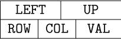
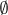
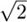
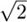

1. [21] Give specifications for the insertion and deletion of information at the left end of a doubly linked list represented as in (1). (With the dual operations at the right end, which are obtained by symmetry, we therefore have all the actions of a general deque.)
 2. [22] Explain why a list that is singly linked cannot allow efficient operation as a general deque; the deletion of items can be done efficiently at only one end of a singly linked list.
2. [22] Explain why a list that is singly linked cannot allow efficient operation as a general deque; the deletion of items can be done efficiently at only one end of a singly linked list.
 3. [22] The elevator system described in the text uses three call variables,
3. [22] The elevator system described in the text uses three call variables, CALLUP, CALLCAR, and CALLDOWN, for each floor, representing buttons that have been pushed by the users in the system. It is conceivable that the elevator actually needs only one or two binary variables for the call buttons on each floor, instead of three. Explain how an experimenter could push buttons in a certain sequence with this elevator system to prove that there are three independent binary variables for each floor (except the top and bottom floors).
4. [24] Activity E9 in the elevator coroutine is usually canceled by step E6; and even when it hasn’t been canceled, it doesn’t do very much. Explain under what circumstances the elevator would behave differently if activity E9 were deleted from the system. Would it, for example, sometimes visit floors in a different order?
5. [20] In Table 1, user 10 arrived on floor 0 at time 1048. Show that if user 10 had arrived on floor 2 instead of floor 0, the elevator would have gone up after receiving its passengers on floor 1, instead of down, in spite of the fact that user 8 wants to go down to floor 0.
6. [23] During the time period 1183–1233 in Table 1, users 7, 8, and 9 all get in the elevator on floor 1; then the elevator goes down to floor 0 and only user 8 gets out. Now the elevator stops again on floor 1, presumably to pick up users 7 and 9 who are already aboard; nobody is actually on floor 1 waiting to get in. (This situation occurs not infrequently at Caltech; if you get on the elevator going the wrong way, you must wait for an extra stop as you go by your original floor again.) In many elevator systems, users 7 and 9 would not have boarded the elevator at time 1183, since lights outside the elevator would show that it was going down, not up; those users would have waited until the elevator came back up and stopped for them. On the system described, there are no such lights and it is impossible to tell which way the elevator is going to go until you are in it; hence Table 1 reflects the actual situation.
What changes should be made to coroutines U and E if we were to simulate the same elevator system, but with indicator lights, so that people do not get on the elevator when its state is contrary to their desired direction?
7. [25] Although bugs in programs are often embarrassing to a programmer, if we are to learn from our mistakes we should record them and tell other people about them instead of forgetting them. The following error (among others) was made by the author when he first wrote the program in this section: Line 154 said ‘JANZ CYCLE’ instead of ‘JANZ U4A’. The reasoning was that if indeed the elevator had arrived at this user’s floor, there was no need to perform the “give up” activity U4 any more, so we could simply go to CYCLE and continue simulating other activities. What was the error?
8. [21] Write the code for step E8, lines 277–292, which has been omitted from the program in the text.
9. [23] Write the code for the DECISION subroutine, which has been omitted from the program in the text.
10. [40] It is perhaps significant to note that although the author had used the elevator system for years and thought he knew it well, it wasn’t until he attempted to write this section that he realized there were quite a few facts about the elevator’s system of choosing directions that he did not know. He went back to experiment with the elevator six separate times, each time believing he had finally achieved a complete understanding of its modus operandi. (Now he is reluctant to ride it for fear that some new facet of its operation will appear, contradicting the algorithms given.) We often fail to realize how little we know about a thing until we attempt to simulate it on a computer.
Try to specify the actions of some elevator you are familiar with. Check the algorithm by experiments with the elevator itself (looking at its circuitry is not fair!); then design a discrete simulator for the system and run it on a computer.
 11. [21] (A sparse-update memory.) The following problem often arises in synchronous simulations: The system has n variables
11. [21] (A sparse-update memory.) The following problem often arises in synchronous simulations: The system has n variables V[1], ..., V[n], and at every simulated step new values for some of them are calculated from the old values. These calculations are assumed done “simultaneously” in the sense that the variables do not change to their new values until after all assignments have been made. Thus, the two statements
V[1] ← V[2] and V[2] ← V[1]
appearing at the same simulated time would interchange the values of V[1] and V[2]; this is quite different from what would happen in a sequential calculation.
The desired action can of course be simulated by keeping an additional table NEWV[1], ..., NEWV[n]. Before each simulated step, we could set NEWV[k] ← V[k] for 1 ≤ k ≤ n, then record all changes of V[k] in NEWV[k], and finally, after the step we could set V[k] ← NEWV[k], 1 ≤ k ≤ n. But this “brute force” approach is not completely satisfactory, for the following reasons: (1) Often n is very large, but the number of variables changed per step is rather small. (2) The variables are often not arranged in a nice table V[1], ..., V[n], but are scattered throughout memory in a rather chaotic fashion. (3) This method does not detect the situation (usually an error in the model) when one variable is given two values in the same simulated step.
Assuming that the number of variables changed per step is rather small, design an efficient algorithm that simulates the desired actions, using two auxiliary tables NEWV[k] and LINK[k], 1 ≤ k ≤ n. If possible, your algorithm should give an error stop if the same variable is being given two different values in the same step.
 12. [22] Why is it a good idea to use doubly linked lists instead of singly linked or sequential lists in the simulation program of this section?
12. [22] Why is it a good idea to use doubly linked lists instead of singly linked or sequential lists in the simulation program of this section?
One of the simplest generalizations of a linear list is a two-dimensional or higher-dimensional array of information. For example, consider the case of an m × n matrix
In this two-dimensional array, each node A[j,k] belongs to two linear lists: the “row j” list A[j,1], A[j,2], ..., A[j,n] and the “column k” list A[1,k], A[2,k], ..., A[m,k]. These orthogonal row and column lists essentially account for the two-dimensional structure of a matrix. Similar remarks apply to higherdimensional arrays of information.
Sequential Allocation. When an array like (1) is stored in sequential memory locations, storage is usually allocated so that
where a0, a1, and a2 are constants. Let us consider a more general case: Suppose we have a four-dimensional array with one-word elements Q[I,J,K,L] for 0 ≤ I ≤ 2, 0 ≤ J ≤ 4, 0 ≤ K ≤ 10, 0 ≤ L ≤ 2. We would like to allocate storage so that
This means that a change in I, J, K, or L leads to a readily calculated change in the location of Q[I,J,K,L]. The most natural (and most commonly used) way to allocate storage is to arrange the array elements according to the lexicographic order of their indices (exercise 1.2.1–15(d)), sometimes called “row major order”:

It is easy to see that this order satisfies the requirements of (3), and we have
In general, given a k-dimensional array with c-word elements A[I1,I2, ... ,Ik] for
0 ≤ I1 ≤ d1, 0 ≤ I2 ≤ d2, ..., 0 ≤ Ik ≤ dk,
we can store it in memory as
where
To see why this formula works, observe that ar is the amount of memory needed to store the subarray A[I1, ...,Ir,Jr+1, ...,Jk] if I1, ..., Ir are constant and Jr+1, ..., Jk vary through all values 0 ≤ Jr+1 ≤ dr+1, ..., 0 ≤ Jk ≤ dk; hence by the nature of lexicographic order the address of A[I1, ...,Ik] should change by precisely this amount when Ir changes by 1.
Formulas (5) and (6) correspond to the value of the number I1I2 ... Ik in a mixed-radix number system. For example, if we had the array TIME[W,D,H,M,S] with 0 ≤ W < 4, 0 ≤ D < 7, 0 ≤ H < 24, 0 ≤ M < 60, and 0 ≤ S < 60, the location of TIME[W,D,H,M,S] would be the location of TIME[0,0,0,0,0] plus the quantity “W weeks + D days + H hours + M minutes + S seconds” converted to seconds. Of course, it takes a pretty fancy application to make use of an array that has 2,419,200 elements.
The normal method for storing arrays is generally suitable when the array has a complete rectangular structure, so that all elements A[I1,I2, ...,Ik] are present for indices in the independent ranges l1 ≤ I1 ≤ u1, l2 ≤ I2 ≤ u2, ..., lk ≤ Ik ≤ uk . Exercise 2 shows how to adapt (5) and (6) to the case when the lower bounds (l1, l2, ..., lk) are not (0, 0, ..., 0).
But there are many situations in which an array is not perfectly rectangular. Most common is the triangular matrix, where we want to store only the entries A[j,k] for, say, 0 ≤ k ≤ j ≤ n:
We may know that all other entries are zero, or that A[j,k] = A[k,j], so that only half of the values need to be stored. If we want to store the lower triangular matrix (7) in  (n + 1)(n + 2) consecutive memory positions, we are forced to give up the possibility of linear allocation as in Eq. (2), but we can ask instead for an allocation arrangement of the form
(n + 1)(n + 2) consecutive memory positions, we are forced to give up the possibility of linear allocation as in Eq. (2), but we can ask instead for an allocation arrangement of the form
where f1 and f2 are functions of one variable. (The constant a0 may be absorbed into either f1 or f2 if desired.) When the addressing has the form (8), a random element A[j,k] can be quickly accessed if we keep two (rather short) auxiliary tables of the values of f1 and f2; therefore these functions need to be calculated only once.
It turns out that lexicographic order of indices for the array (7) satisfies condition (8), and with one-word entries we have in fact the simple formula
But there is actually a far better way to store triangular matrices, if we are fortunate enough to have two of them with the same size. Suppose that we want to store both A[j,k] and B[j,k] for 0 ≤ k ≤ j ≤ n. Then we can fit them both into a single matrix C[j,k] for 0 ≤ j ≤ n, 0 ≤ k ≤ n + 1, using the convention

The two triangular matrices are packed together tightly within the space of (n + 1)(n + 2) locations, and we have linear addressing as in (2).
The generalization of triangular matrices to higher dimensions is called a tetrahedral array. This interesting topic is the subject of exercises 6 through 8.
As an example of typical programming techniques for use with sequentially stored arrays, see exercise 1.3.2–10 and the two answers given for that exercise. The fundamental techniques for efficient traversal of rows and columns, as well as the uses of sequential stacks, are of particular interest within those programs.
Linked Allocation. Linked memory allocation also applies to higher-dimensional arrays of information in a natural way. In general, our nodes can contain k link fields, one for each list the node belongs to. The use of linked memory is generally for cases in which the arrays are not strictly rectangular in character.
As an example, we might have a list in which every node represents a person, with four link fields: SEX, AGE, EYES, and HAIR. In the EYES field we link together all nodes with the same eye color, etc. (See Fig. 13.) It is easy to visualize efficient algorithms for inserting new people into the list; deletion would, however, be much slower, unless we used double linking. We can also conceive of algorithms of varying degrees of efficiency for doing things like “Find all blue-eyed blonde women of ages 21 through 23”; see exercises 9 and 10. Problems in which each node of a list is to reside in several kinds of other lists at once arise rather frequently; indeed, the elevator system simulation described in the preceding section has nodes that are in both the QUEUE and WAIT lists simultaneously.
As a detailed example of the use of linked allocation for orthogonal lists, we will consider the case of sparse matrices (that is, matrices of large order in which most of the elements are zero). The goal is to operate on these matrices as though the entire matrix were present, but to save great amounts of time and space because the zero entries need not be represented. One way to do this, intended for random references to elements of the matrix, would be to use the storage and retrieval methods of Chapter 6, to find A[j,k] from the key “[j, k]”; however, there is another way to deal with sparse matrices that is often preferable because it reflects the matrix structure more appropriately, and this is the method we will discuss here.
The representation we will discuss consists of circularly linked lists for each row and column. Every node of the matrix contains three words and five fields:
Here ROW and COL are the row and column indices of the node; VAL is the value stored at that part of the matrix; LEFT and UP are links to the next nonzero entry to the left in the row, or upward in the column, respectively. There are special list head nodes, BASEROW[i] and BASECOL[j], for every row and column. These nodes are identified by
COL(LOC(BASEROW[i])) < 0 and ROW(LOC(BASECOL[j])) < 0.
As usual in a circular list, the LEFT link in BASEROW[i] is the location of the rightmost value in that row, and UP in BASECOL[j] points to the bottom-most value in that column. For example, the matrix
would be represented as shown in Fig. 14.
Fig. 14. Representation of matrix (12), with nodes in the format . List heads appear at the left and at the top.
Using sequential allocation of storage, a 200 × 200 matrix would take 40000 words, and this is more memory than many computers used to have; but a suitably sparse 200 × 200 matrix can be represented as above even in MIX’s 4000-word memory. (See exercise 11.) The amount of time taken to access a random element A[j,k] is also quite reasonable, if there are but few elements in each row or column; and since most matrix algorithms proceed by walking sequentially through a matrix, instead of accessing elements at random, this linked representation often works faster than a sequential one.
As a typical example of a nontrivial algorithm dealing with sparse matrices in this form, we will consider the pivot step operation, which is an important part of algorithms for solving linear equations, for inverting matrices, and for solving linear programming problems by the simplex method. A pivot step is the following matrix transformation (see M. H. Doolittle, Report of the Superintendent of the U.S. Coast and Geodetic Survey (1878), 115–120):
It is assumed that the pivot element, a, is nonzero. For example, a pivot step applied to matrix (12), with the element 10 in row 2 column 1 as pivot, leads to
Our goal is to design an algorithm that performs this pivot operation on sparse matrices that are represented as in Fig. 14. It is clear that the transformation (13) affects only those rows of a matrix for which there is a nonzero element in the pivot column, and it affects only those columns for which there is a nonzero entry in the pivot row.
The pivoting algorithm is in many ways a straightforward application of linking techniques we have already discussed; in particular, it bears strong resemblances to Algorithm 2.2.4A for addition of polynomials. There are two things, however, that make the problem a little tricky: If in (13) we have b ≠ 0 and c ≠ 0 but d ≠ 0, the sparse matrix representation has no entry for d and we must insert a new entry; and if b ≠ 0, c ≠ 0, d ≠ 0, but d − bc/a = 0, we must delete the entry that was formerly there. These insertion and deletion operations are more interesting in a two-dimensional array than in the one-dimensional case; to do them we must know what links are affected. Our algorithm processes the matrix rows successively from bottom to top. The efficient ability to insert and delete involves the introduction of a set of pointer variables PTR[j], one for each column considered; these variables traverse the columns upwards, giving us the ability to update the proper links in both dimensions.
Algorithm S (Pivot step in a sparse matrix). Given a matrix represented as in Fig. 14, we perform the pivot operation (13). Assume that PIVOT is a link variable pointing to the pivot element. The algorithm makes use of an auxiliary table of link variables PTR[j], one for each column of the matrix. The variable ALPHA and the VAL field of each node are assumed to be floating point or rational quantities, while everything else in this algorithm has integer values.
S1. [Initialize.] Set ALPHA ← 1.0/VAL(PIVOT), VAL(PIVOT) ← 1.0, and
I0 ← ROW(PIVOT), P0 ← LOC(BASEROW[I0]);
J0 ← COL(PIVOT), Q0 ← LOC(BASECOL[J0]).
S2. [Process pivot row.] Set P0 ← LEFT(P0), J ← COL(P0). If J < 0, go on to step S3 (the pivot row has been traversed). Otherwise set PTR[J] ← LOC(BASECOL[J]) and VAL(P0) ← ALPHA × VAL(P0), and repeat step S2.
S3. [Find new row.] Set Q0 ← UP(Q0). (The remainder of the algorithm deals successively with each row, from bottom to top, for which there is an entry in the pivot column.) Set I ← ROW(Q0). If I < 0, the algorithm terminates. If I = I0, repeat step S3 (we have already done the pivot row). Otherwise set P ← LOC(BASEROW[I]), P1 ← LEFT(P). (The pointers P and P1 will now proceed across row I from right to left, as P0 goes in synchronization across row I0; Algorithm 2.2.4A is analogous. We have P0 = LOC(BASEROW[I0]) at this point.)
S4. [Find new column.] Set P0 ← LEFT(P0), J ← COL(P0). If J < 0, set VAL(Q0) ← –ALPHA × VAL(Q0) and return to S3. If J = J0, repeat step S4. (Thus we process the pivot column entry in row I after all other column entries have been processed; the reason is that VAL(Q0) is needed in step S7.)
S5. [Find I, J element.] If COL(P1) > J, set P ← P1, P1 ← LEFT(P), and repeat step S5. If COL(P1) = J, go to step S7. Otherwise go to step S6 (we need to insert a new element in column J of row I).
S6. [Insert I, J element.] If ROW(UP(PTR[J])) > I, set PTR[J] ← UP(PTR[J]), and repeat step S6. (Otherwise, we will have ROW(UP(PTR[J])) < I; the new element is to be inserted just above NODE(PTR[J]) in the vertical dimension, and just left of NODE(P) in the horizontal dimension.) Otherwise set X ⇐ AVAIL, VAL(X) ← 0, ROW(X) ← I, COL(X) ← J, LEFT(X) ← P1, UP(X) ← UP(PTR[J]), LEFT(P) ← X, UP(PTR[J]) ← X, P1 ← X.
S7. [Pivot.] Set VAL(P1) ← VAL(P1) − VAL(Q0) × VAL(P0). If now VAL(P1) = 0, go to S8. (Note: When floating point arithmetic is being used, this test “VAL(P1) = 0” should be replaced by “|VAL(P1)| < EPSILON” or better yet by the condition “most of the significant figures of VAL(P1) were lost in the subtraction.”) Otherwise, set PTR[J] ← P1, P ← P1, P1 ← LEFT(P), and go back to S4.
S8. [Delete I, J element.] If UP(PTR[J]) ≠ P1 (or, what is essentially the same thing, if ROW(UP(PTR[J])) > I), set PTR[J] ← UP(PTR[J]) and repeat step S8; otherwise, set UP(PTR[J]) ← UP(P1), LEFT(P) ← LEFT(P1), AVAIL ⇐ P1, P1 ← LEFT(P). Go back to S4. 
The programming of this algorithm is left as a very instructive exercise for the reader (see exercise 15). It is worth pointing out here that it is necessary to allocate only one word of memory to each of the nodes BASEROW[i], BASECOL[j], since most of their fields are irrelevant. (See the shaded areas in Fig. 14, and see the program of Section 2.2.5.) Furthermore, the value −PTR[j] can be stored as ROW(LOC(BASECOL[j])) for additional storage space economy. The running time of Algorithm S is very roughly proportional to the number of matrix elements affected by the pivot operation.
This representation of sparse matrices via orthogonal circular lists is instructive, but numerical analysts have developed better methods. See Fred G. Gustavson, ACM Trans. on Math. Software 4 (1978), 250–269; see also the graph and network algorithms in Chapter 7 (for example, Algorithm 7B).
Exercises
1. [17] Give a formula for LOC(A[J,K]) if A is the matrix of (1), and if each node of the array is two words long, assuming that the nodes are stored consecutively in lexicographic order of the indices.
 2. [21] Formulas (5) and (6) have been derived from the assumption that 0 ≤
2. [21] Formulas (5) and (6) have been derived from the assumption that 0 ≤ Ir ≤ dr for 1 ≤ r ≤ k. Give a general formula that applies to the case lr ≤ Ir ≤ ur, where lr and ur are any lower and upper bounds on the dimensionality.
3. [21] The text considers lower triangular matrices A[j,k] for 0 ≤ k ≤ j ≤ n. How can the discussion of such matrices readily be modified for the case that subscripts start at 1 instead of 0, so that 1 ≤ k ≤ j ≤ n?
4. [22] Show that if we store the upper triangular array A[j,k] for 0 ≤ j ≤ k ≤ n in lexicographic order of the indices, the allocation satisfies the condition of Eq. (8). Find a formula for LOC(A[J,K]) in this sense.
5. [20] Show that it is possible to bring the value of A[J,K] into register A in one MIX instruction, using the indirect addressing feature of exercise 2.2.2–3, even when A is a triangular matrix as in (9). (Assume that the values of J and K are in index registers.)
 6. [M24] Consider the “tetrahedral arrays”
6. [M24] Consider the “tetrahedral arrays” A[i,j,k], B[i,j,k], where 0 ≤ k ≤ j ≤ i ≤ n in A, and 0 ≤ i ≤ j ≤ k ≤ n in B. Suppose that both of these arrays are stored in consecutive memory locations in lexicographic order of the indices; show that LOC(A[I,J,K]) = a0 + f1 (I) + f2 (J) + f3 (K) for certain functions f1, f2, f3. Can LOC(B[I,J,K]) be expressed in a similar manner?
7. [M23] Find a general formula to allocate storage for the k-dimensional tetrahedral array A[i1, i2, ...,ik], where 0 ≤ ik ≤ · · · ≤ i2 ≤ i1 ≤ n.
8. [33] (P. Wegner.) Suppose we have six tetrahedral arrays A[I,J,K], B[I,J,K], C[I,J,K], D[I,J,K], E[I,J,K], and F[I,J,K] to store in memory, where 0 ≤ K ≤ J ≤ I ≤ n. Is there a neat way to accomplish this, analogous to (10) in the two-dimensional case?
9. [22] Suppose a table, like that indicated in Fig. 13 but much larger, has been set up so that all links go in the same direction as shown there (namely, LINK(X) < X for all nodes and links). Design an algorithm that finds the addresses of all blue-eyed blonde women of ages 21 through 23, by going through the various link fields in such a way that upon completion of the algorithm at most one pass has been made through each of the lists FEMALE, A21, A22, A23, BLOND, and BLUE.
10. [26] Can you think of a better way to organize a personnel table so that searches as described in the previous exercise would be more efficient? (The answer to this exercise is not merely “yes” or “no.”)
11. [11] Suppose that we have a 200 × 200 matrix in which there are at most four nonzero entries per row. How much storage is required to represent this matrix as in Fig. 14, if we use three words per node except for list heads, which will use one word?
 12. [20] What are
12. [20] What are VAL(Q0), VAL(P0), and VAL(P1) at the beginning of step S7, in terms of the notation a, b, c, d used in (13)?
 13. [22] Why were circular lists used in Fig. 14 instead of straight linear lists? Could Algorithm S be rewritten so that it does not make use of the circular linkage?
13. [22] Why were circular lists used in Fig. 14 instead of straight linear lists? Could Algorithm S be rewritten so that it does not make use of the circular linkage?
14. [22] Algorithm S actually saves pivoting time in a sparse matrix, since it avoids consideration of those columns in which the pivot row has a zero entry. Show that this savings in running time can be achieved in a large sparse matrix that is stored sequentially, with the help of an auxiliary table LINK[j], 1 ≤ j ≤ n.
 15. [29] Write a
15. [29] Write a MIXAL program for Algorithm S. Assume that the VAL field is a floating point number, and that MIX’s floating point arithmetic operators FADD, FSUB, FMUL, and FDIV can be used for operations on this field. Assume for simplicity that FADD and FSUB return the answer zero when the operands added or subtracted cancel most of the significance, so that the test “VAL(P1) = 0” may safely be used in step S7. The floating point operations use only rA, not rX.
16. [25] Design an algorithm to copy a sparse matrix. (In other words, the algorithm is to yield two distinct representations of a matrix in memory, having the form of Fig. 14, given just one such representation initially.)
17. [26] Design an algorithm to multiply two sparse matrices; given matrices A and B, form a new matrix C, where C[i,j] = ∑kA[i,k]B[k,j]. The two input matrices and the output matrix should be represented as in Fig. 14.
18. [22] The following algorithm replaces a matrix by the inverse of that matrix, assuming that the entries are A[i,j], for 1 ≤ i, j ≤ n:
i) For k = 1, 2, ..., n do the following: Search row k in all columns not yet used as a pivot column, to find an entry with the greatest absolute value; set C[k] equal to the column in which this entry was found, and do a pivot step with this entry as pivot. (If all such entries are zero, the matrix is singular and has no inverse.)
ii) Permute rows and columns so that what was row k becomes row C[k], and what was column C[k] becomes column k.
The problem in this exercise is to use the stated algorithm to invert the matrix
by hand calculation.
19. [31] Modify the algorithm described in exercise 18 so that it obtains the inverse of a sparse matrix that is represented in the form of Fig. 14. Pay special attention to making the row-and column-permutation operations of step (ii) efficient.
20. [20] A tridiagonal matrix has entries aij that are zero except when |i − j| ≤ 1, for 1 ≤ i, j ≤ n. Show that there is an allocation function of the form
LOC(A[I,J]) = a0 + a1I + a2J, |I − J| ≤ 1,
which represents all of the relevant elements of a tridiagonal matrix in (3n − 2) consecutive locations.
21. [20] Suggest a storage allocation function for n × n matrices where n is variable. The elements A[I,J] for 1 ≤ I,J ≤ n should occupy n2 consecutive locations, regardless of the value of n.
22. [M25] (P. Chowla, 1961.) Find a polynomial p(i1, ..., ik) that assumes each nonnegative integer value exactly once as the indices (i1, ..., ik) run through all k-dimensional nonnegative integer vectors, with the additional property that i1 +· · ·+ik < j1 + · · · + jk implies p(i1, ..., ik) < p(j1, ..., jk).
23. [23] An extendible matrix is initially 1 × 1, then it grows from size m × n either to size (m + 1) × n or to size m × (n + 1) by adding either a new row or a new column. Show that such a matrix can be given a simple allocation function in which the elements A[I,J] occupy mn consecutive locations, for 0 ≤ I < m and 0 ≤ J < n; no elements change location when the matrix grows.
 24. [25] (The sparse array trick.) Suppose you want to use a large array for random access, although you won’t actually be referring to very many of its entries. You want
24. [25] (The sparse array trick.) Suppose you want to use a large array for random access, although you won’t actually be referring to very many of its entries. You want A[k] to be zero the first time you access it, yet you don’t want to spend the time to set every location to zero. Explain how it is possible to read and write any desired elements A[k] reliably, given k, without assuming anything about the actual initial memory contents, by doing only a small fixed number of additional operations per array access.
WE NOW TURN to a study of trees, the most important nonlinear structures that arise in computer algorithms. Generally speaking, tree structure means a “branching” relationship between nodes, much like that found in the trees of nature.
Let us define a tree formally as a finite set T of one or more nodes such that
a) there is one specially designated node called the root of the tree, root(T); and
b) the remaining nodes (excluding the root) are partitioned into m ≥ 0 disjoint sets T1, ..., Tm, and each of these sets in turn is a tree. The trees T1, ..., Tm are called the subtrees of the root.
The definition just given is recursive: We have defined a tree in terms of trees. Of course, there is no problem of circularity involved here, since trees with one node must consist of only the root, and trees with n > 1 nodes are defined in terms of trees with fewer than n nodes; hence the concept of a tree with two nodes, three nodes, or ultimately any number of nodes, is determined by the definition given. There are nonrecursive ways to define trees (for example, see exercises 10, 12, and 14, and Section 2.3.4), but a recursive definition seems most appropriate since recursion is an innate characteristic of tree structures. The recursive character of trees is present also in nature, since buds on young trees eventually grow into subtrees with buds of their own, and so on. Exercise 3 illustrates how to give rigorous proofs of important facts about trees based on a recursive definition such as the one above, by using induction on the number of nodes in a tree.
It follows from our definition that every node of a tree is the root of some subtree contained in the whole tree. The number of subtrees of a node is called the degree of that node. A node of degree zero is called a terminal node, or sometimes a leaf. A nonterminal node is often called a branch node. The level of a node with respect to T is defined recursively: The level of root(T) is zero, and the level of any other node is one higher than that node’s level with respect to the subtree of root(T) containing it.
These concepts are illustrated in Fig. 15, which shows a tree with seven nodes. The root is A, and it has the two subtrees {B} and {C, D, E, F, G}. The tree {C, D, E, F, G} has node C as its root. Node C is on level 1 with respect to the whole tree, and it has three subtrees {D}, {E}, and {F, G}; therefore C has degree 3. The terminal nodes in Fig. 15 are B, D, E, and G; F is the only node with degree 1; G is the only node with level 3.
If the relative order of the subtrees T1, ..., Tm in (b) of the definition is important, we say that the tree is an ordered tree; when m ≥ 2 in an ordered tree, it makes sense to call T2 the “second subtree” of the root, etc. Ordered trees are also called “plane trees” by some authors, since the manner of embedding the tree in a plane is relevant. If we do not care to regard two trees as different when they differ only in the respective ordering of subtrees of nodes, the tree is said to be oriented, since only the relative orientation of the nodes, not their order, is being considered. The very nature of computer representation defines an implicit ordering for any tree, so in most cases ordered trees are of greatest interest to us. We will therefore tacitly assume that all trees we discuss are ordered, unless explicitly stated otherwise. Accordingly, the trees of Figs. 15 and 16 will generally be considered to be different, although they would be the same as oriented trees.
A forest is a set (usually an ordered set) of zero or more disjoint trees. Another way to phrase part (b) of the definition of tree would be to say that the nodes of a tree excluding the root form a forest.
There is very little distinction between abstract forests and trees. If we delete the root of a tree, we have a forest; conversely, if we add just one node to any forest and regard the trees of the forest as subtrees of the new node, we get a tree. Therefore the words tree and forest are often used almost interchangeably during informal discussions about data structures.
Trees can be drawn in many ways. Besides the diagram of Fig. 15, three of the principal alternatives are shown in Fig. 17, depending on where the root is placed. It is not a frivolous joke to worry about how tree structures are drawn in diagrams, since there are many occasions in which we want to say that one node is “above” or “higher than” another node, or to refer to the “rightmost” element, etc. Certain algorithms for dealing with tree structures have become known as “top down” methods, as opposed to “bottom up.” Such terminology leads to confusion unless we adhere to a uniform convention for drawing trees.
It may seem that the form of Fig. 15 would be preferable simply because that is how trees grow in nature; in the absence of any compelling reason to adopt any of the other three forms, we might as well adopt nature’s time-honored tradition. With real trees in mind, the author consistently followed a root-at-the-bottom convention as the present set of books was first being prepared, but after two years of trial it was found to be a mistake: Observations of the computer literature and numerous informal discussions with computer scientists about a wide variety of algorithms showed that trees were drawn with the root at the top in more than 80 percent of the cases examined. There is an overwhelming tendency to make hand-drawn charts grow downwards instead of upwards (and this is easy to understand in view of the way we write); even the word “subtree,” as opposed to “supertree,” tends to connote a downward relationship. From these considerations we conclude that Fig. 15 is upside down. Henceforth we will almost always draw trees as in Fig. 17(b), with the root at the top and leaves at the bottom. Corresponding to this orientation, we should perhaps call the root node the apex of the tree, and speak of nodes at shallow and deep levels.
It is necessary to have good descriptive terminology for talking about trees. Instead of making somewhat ambiguous references to “above” and “below,” we generally use genealogical words taken from the terminology of family trees. Figure 18 shows two common types of family trees. The two types are quite different: A pedigree shows the ancestors of a given individual, while a lineal chart shows the descendants.

Fig. 18. Family trees: (a) pedigree; (b) lineal chart. [References: Burke’s Peerage (1959); Almanach de Gotha (1871); Genealogisches Handbuch des Adels: Fürstliche Häuser, 1; Genesis 10 : 1–25.]
If “cross-breeding” occurs, a pedigree is not really a tree, because different branches of a tree (as we have defined it) can never be joined together. To compensate for this discrepancy, Fig. 18(a) mentions Queen Victoria and Prince Albert twice in the sixth generation; King Christian IX and Queen Louise actually appear in both the fifth and sixth generations. A pedigree can be regarded as a true tree if each of its nodes represents “a person in the role of mother or father of so-and-so,” not simply a person as an individual.
Standard terminology for tree structures is taken from the second form of family tree, the lineal chart: Each root is said to be the parent of the roots of its subtrees, and the latter are said to be siblings; they are children of their parent. The root of the entire tree has no parent. For example, in Fig. 19, C has three children, D, E, and F; E is the parent of G; B and C are siblings. Extension of this terminology — for example, A is the great-grandparent of G; B is an aunt or uncle of F; H and F are first cousins — is clearly possible. Some authors use the masculine designations “father, son, brother” instead of “parent, child, sibling”; others use “mother, daughter, sister.” In any case a node has at most one parent or progenitor. We use the words ancestor and descendant to denote a relationship that may span several levels of the tree: The descendants of C in Fig. 19 are D, E, F, and G; the ancestors of G are E, C, and A. Sometimes, especially when talking about “nearest common ancestors,” we consider a node to be an ancestor of itself (and a descendant of itself); the inclusive ancestors of G are G, E, C, and A, while its proper ancestors are just E, C, and A.
The pedigree in Figure 18(a) is an example of a binary tree, which is another important type of tree structure. The reader has undoubtedly seen binary trees in connection with tennis tournaments or other sporting events. In a binary tree each node has at most two subtrees; and when only one subtree is present, we distinguish between the left and right subtree. More formally, let us define a binary tree as a finite set of nodes that either is empty, or consists of a root and the elements of two disjoint binary trees called the left and right subtrees of the root.
This recursive definition of binary tree should be studied carefully. Notice that a binary tree is not a special case of a tree; it is another concept entirely (although we will see many relations between the two concepts). For example, the binary trees
are distinct — the root has an empty right subtree in one case and a nonempty right subtree in the other — although as trees these diagrams would represent identical structures. A binary tree can be empty; a tree cannot. Therefore we will always be careful to use the word “binary” to distinguish between binary trees and ordinary trees. Some authors define binary trees in a slightly different manner (see exercise 20).
Tree structure can be represented graphically in several other ways bearing no resemblance to actual trees. Figure 20 shows three diagrams that reflect the structure of Fig. 19: Figure 20(a) essentially represents Fig. 19 as an oriented tree; this diagram is a special case of the general idea of nested sets, namely a collection of sets in which any pair of sets is either disjoint or one contains the other. (See exercise 10.) Part (b) of the figure shows nested sets in a line, much as part (a) shows them in a plane; in part (b) the ordering of the tree is also indicated. Part (b) may also be regarded as an outline of an algebraic formula involving nested parentheses. Part (c) shows still another common way to represent tree structure, using indentation. The number of different representation methods in itself is ample evidence for the importance of tree structures in everyday life as well as in computer programming. Any hierarchical classification scheme leads to a tree structure.
Fig. 20. Further ways to show tree structure: (a) nested sets; (b) nested parentheses; (c) indentation.
An algebraic formula defines an implicit tree structure that is often conveyed by other means instead of, or in addition to, the use of parentheses. For example, Figure 21 shows a tree corresponding to the arithmetic expression
Fig. 21. Tree representation of formula (2).
Standard mathematical conventions, according to which multiplication and division take precedence over addition and subtraction, allow us to use a simplified form like (2) instead of the fully parenthesized form “a − (b × ((c/d) + (e/f)))”. This connection between formulas and trees is very important in applications.
Notice that the indented list in Fig. 20(c) looks very much like the table of contents in a book. Indeed, this book itself has a tree structure; the tree structure of Chapter 2 is shown in Fig. 22. Here we notice a significant idea: The method used to number sections in this book is another way to specify tree structure. Such a method is often called “Dewey decimal notation” for trees, by analogy with the similar classification scheme of this name used in libraries. The Dewey decimal notation for the tree of Fig. 19 is
1 A; 1.1 B; 1.1.1 H; 1.1.2 J; 1.2 C;
1.2.1 D; 1.2.2 E; 1.2.2.1 G; 1.2.3 F.
Dewey decimal notation applies to any forest: The root of the kth tree in the forest is given number k; and if α is the number of any node of degree m, its children are numbered α.1, α.2, ..., α.m. The Dewey decimal notation satisfies many simple mathematical properties, and it is a useful tool in the analysis of trees. One example of this is the natural sequential ordering it gives to the nodes of an arbitrary tree, analogous to the ordering of sections within this book. Section 2.3 precedes Section 2.3.1, and follows Section 2.2.6.
There is an intimate relation between Dewey decimal notation and the notation for indexed variables that we have already been using extensively. If F is a forest of trees, we may let F [1] denote the subtrees of the first tree, so that F [1][2] ≡ F [1, 2] stands for the subtrees of the second subtree of F [1], and F [1, 2, 1] stands for the first subforest of the latter, and so on. Node a.b.c.d in Dewey decimal notation is the parent of F [a, b, c, d]. This notation is an extension of ordinary index notation, because the admissible range of each index depends on the values in the preceding index positions.
Thus, in particular, we see that any rectangular array can be thought of as a special case of a tree or forest structure. For example, here are two representations of a 3 × 4 matrix:
It is important to observe, however, that this tree structure does not faithfully reflect all of the matrix structure; the row relationships appear explicitly in the tree but the column relationships do not.
A forest can, in turn, be regarded as a special case of what is commonly called a list structure. The word “list” is being used here in a very technical sense, and to distinguish the technical use of the word we will always capitalize it: “List.” A List is defined (recursively) as a finite sequence of zero or more atoms or Lists. Here “atom” is an undefined concept referring to elements from any universe of objects that might be desired, so long as it is possible to distinguish an atom from a List. By means of an obvious notational convention involving commas and parentheses, we can distinguish between atoms and Lists and we can conveniently display the ordering within a List. As an example, consider
which is a List with five elements: first the atom a, then the List (b, a, b), then the empty List (), then the atom c, and finally the List (((2))). The latter List consists of the List ((2)), which consists of the List (2), which consists of the atom 2.
The following tree structure corresponds to L:
The asterisks in this diagram indicate the definition and appearance of a List, as opposed to the appearance of an atom. Index notation applies to Lists as it does to forests; for example, L[2] = (b, a, b), and L[2, 2] = a.
No data is carried in the nodes for the Lists in (4) other than the fact that they are Lists. But it is possible to label the nonatomic elements of Lists with information, as we have done for trees and other structures; thus
A = (a: (b, c), d: ())
would correspond to a tree that we can draw as follows:
The big difference between Lists and trees is that Lists may overlap (that is, sub-Lists need not be disjoint) and they may even be recursive (may contain themselves). The List
corresponds to no tree structure, nor does the List
(In these examples, capital letters refer to Lists, lowercase letters to labels and atoms.) We might diagram (5) and (6) as follows, using an asterisk to denote each place where a List is defined:
Actually, Lists are not so complicated as the examples above might indicate. They are, in essence, a rather simple generalization of the linear lists that we have considered in Section 2.2, with the additional proviso that the elements of linear Lists may be link variables that point to other linear Lists (and possibly to themselves).
Summary: Four closely related kinds of information structures — trees, forests, binary trees, and Lists — arise from many sources, and they are therefore important in computer algorithms. We have seen various ways to diagram these structures, and we have considered some terminology and notations that are useful in talking about them. The following sections develop these ideas in greater detail.
Exercises
1. [18] How many different trees are there with three nodes, A, B, and C ?
2. [20] How many different oriented trees are there with three nodes, A, B, and C ?
3. [M20] Prove rigorously from the definitions that for every node X in a tree there is a unique path up to the root, namely a unique sequence of k ≥ 1 nodes X1, X2, ..., Xk such that X1 is the root of the tree, Xk = X, and Xj is the parent of Xj+1 for 1 ≤ j < k. (This proof will be typical of the proofs of nearly all the elementary facts about tree structures.) Hint: Use induction on the number of nodes in the tree.
4. [01] True or false: In a conventional tree diagram (root at the top), if node X has a higher level number than node Y, then node X appears lower in the diagram than node Y.
5. [02] If node A has three siblings and B is the parent of A, what is the degree of B?
 6. [21] Define the statement “X is an mth cousin of Y, n times removed” as a meaningful relation between nodes X and Y of a tree, by analogy with family trees, if m > 0 and n ≥ 0. (See a dictionary for the meaning of these terms in regard to family trees.)
6. [21] Define the statement “X is an mth cousin of Y, n times removed” as a meaningful relation between nodes X and Y of a tree, by analogy with family trees, if m > 0 and n ≥ 0. (See a dictionary for the meaning of these terms in regard to family trees.)
7. [23] Extend the definition given in the previous exercise to all m ≥ −1 and to all integers n ≥ −(m + 1) in such a way that for any two nodes X and Y of a tree there are unique m and n such that X is an mth cousin of Y, n times removed.
 8. [03] What binary tree is not a tree?
8. [03] What binary tree is not a tree?
9. [00] In the two binary trees of (1), which node is the root (B or A)?
10. [M20] A collection of nonempty sets is said to be nested if, given any pair X, Y of the sets, either X ⊆ Y or X ⊇ Y or X and Y are disjoint. (In other words, X ∩ Y is either X, Y, or .) Figure 20(a) indicates that any tree corresponds to a collection of nested sets; conversely, does every such collection correspond to a tree?
 11. [HM32] Extend the definition of tree to infinite trees by considering collections of nested sets as in exercise 10. Can the concepts of level, degree, parent, and child be defined for each node of an infinite tree? Give examples of nested sets of real numbers that correspond to a tree in which
11. [HM32] Extend the definition of tree to infinite trees by considering collections of nested sets as in exercise 10. Can the concepts of level, degree, parent, and child be defined for each node of an infinite tree? Give examples of nested sets of real numbers that correspond to a tree in which
a) every node has uncountable degree and there are infinitely many levels;
b) there are nodes with uncountable level;
c) every node has degree at least 2 and there are uncountably many levels.
12. [M23] Under what conditions does a partially ordered set correspond to an unordered tree or forest? (Partially ordered sets are defined in Section 2.2.3.)
13. [10] Suppose that node X is numbered a1 .a2 . · · · .ak in the Dewey decimal system; what are the Dewey numbers of the nodes in the path from X to the root (see exercise 3)?
14. [M22] Let S be any nonempty set of elements having the form “1.a1 . · · · .ak”, where k ≥ 0 and a1, ..., ak are positive integers. Show that S specifies a tree when it is finite and satisfies the following condition: “If α.m is in the set, then so is α.(m − 1) if m > 1, or α if m = 1.” (This condition is clearly satisfied in the Dewey decimal notation for a tree; therefore it is another way to characterize tree structure.)
 15. [20] Invent a notation for the nodes of binary trees, analogous to the Dewey decimal notation for nodes of trees.
15. [20] Invent a notation for the nodes of binary trees, analogous to the Dewey decimal notation for nodes of trees.
16. [20] Draw trees analogous to Fig. 21 corresponding to the arithmetic expressions (a) 2(a − b/c); (b) a + b + 5c.
17. [01] If Z stands for Fig. 19 regarded as a forest, what node is parent(Z [1, 2, 2])?
18. [08] In List (3), what is L[5, 1, 1]? What is L[3, 1]?
19. [15] Draw a List diagram analogous to (7) for the List L = (a, (L)). What is L[2] in this List? What is L[2, 1, 1]?
 20. [M21] Define a 0-2-tree as a tree in which each node has exactly zero or two children. (Formally, a 0 -2-tree consists of a single node, called its root, plus 0 or 2 disjoint 0 -2-trees.) Show that every 0 -2-tree has an odd number of nodes; and give a one-to-one correspondence between binary trees with n nodes and (ordered) 0 -2-trees with 2n + 1 nodes.
20. [M21] Define a 0-2-tree as a tree in which each node has exactly zero or two children. (Formally, a 0 -2-tree consists of a single node, called its root, plus 0 or 2 disjoint 0 -2-trees.) Show that every 0 -2-tree has an odd number of nodes; and give a one-to-one correspondence between binary trees with n nodes and (ordered) 0 -2-trees with 2n + 1 nodes.
21. [M22] If a tree has n1 nodes of degree 1, n2 nodes of degree 2, ..., and nm nodes of degree m, how many terminal nodes does it have?
 22. [21] Standard European paper sizes A0, A1, A2, ..., An, ... are rectangles whose sides are in the ratio  to 1 and whose areas are 2−n square meters. Therefore if we cut a sheet of An paper in half, we get two sheets of A(n + 1) paper. Use this principle to design a graphic representation of binary trees, and illustrate your idea by drawing the representation of 2.3.1–(1) below.
22. [21] Standard European paper sizes A0, A1, A2, ..., An, ... are rectangles whose sides are in the ratio  to 1 and whose areas are 2−n square meters. Therefore if we cut a sheet of An paper in half, we get two sheets of A(n + 1) paper. Use this principle to design a graphic representation of binary trees, and illustrate your idea by drawing the representation of 2.3.1–(1) below.
It is important to acquire a good understanding of the properties of binary trees before making further investigations of trees, since general trees are usually represented in terms of some equivalent binary tree inside a computer.
We have defined a binary tree as a finite set of nodes that either is empty, or consists of a root together with two binary trees. This definition suggests a natural way to represent binary trees within a computer: We can have two links, LLINK and RLINK, within each node, and a link variable T that is a “pointer to the tree.” If the tree is empty, T = Λ; otherwise T is the address of the root node of the tree, and LLINK(T), RLINK(T) are pointers to the left and right subtrees of the root, respectively. These rules recursively define the memory representation of any binary tree; for example,
is represented by
This simple and natural memory representation accounts for the special importance of binary tree structures. We will see in Section 2.3.2 that general trees can conveniently be represented as binary trees. Moreover, many trees that arise in applications are themselves inherently binary, so binary trees are of interest in their own right.
There are many algorithms for manipulation of tree structures, and one idea that occurs repeatedly in these algorithms is the notion of traversing or “walking through” a tree. This is a method of examining the nodes of the tree systematically so that each node is visited exactly once. A complete traversal of the tree gives us a linear arrangement of the nodes, and many algorithms are facilitated if we can talk about the “next” node following or preceding a given node in such a sequence.
Three principal ways may be used to traverse a binary tree: We can visit the nodes in preorder, inorder, or postorder. These three methods are defined recursively. When the binary tree is empty, it is “traversed” by doing nothing; otherwise the traversal proceeds in three steps:
If we apply these definitions to the binary tree of (1) and (2), we find that the nodes in preorder are
(First comes the root A, then comes the left subtree
in preorder, and finally we traverse the right subtree in preorder.) For inorder we visit the root between visits to the nodes of each subtree, essentially as though the nodes were “projected” down onto a single horizontal line, and this gives the sequence
The postorder for the nodes of this binary tree is, similarly,
We will see that these three ways of arranging the nodes of a binary tree into a sequence are extremely important, as they are intimately connected with most of the computer methods for dealing with trees. The names preorder, inorder, and postorder come, of course, from the relative position of the root with respect to its subtrees. In many applications of binary trees, there is symmetry between the meanings of left subtrees and right subtrees, and in such cases the term symmetric order is used as a synonym for inorder. Inorder, which puts the root in the middle, is essentially symmetric between left and right: If the binary tree is reflected about a vertical axis, the symmetric order is simply reversed.
Fig. 23. Algorithm T for inorder traversal.
A recursively stated definition, such as the one just given for the three basic orders, must be reworked in order to make it directly applicable to computer implementation. General methods for doing this are discussed in Chapter 8; we usually make use of an auxiliary stack, as in the following algorithm:
Algorithm T (Traverse binary tree in inorder). Let T be a pointer to a binary tree having a representation as in (2); this algorithm visits all the nodes of the binary tree in inorder, making use of an auxiliary stack A.
T1. [Initialize.] Set stack A empty, and set the link variable P ← T.
T2. [P = Λ?] If P = Λ, go to step T4.
T3. [Stack ⇐ P.] (Now P points to a nonempty binary tree that is to be traversed.) Set A ⇐ P; that is, push the value of P onto stack A. (See Section 2.2.1.) Then set P ← LLINK(P) and return to step T2.
T4. [P ⇐ Stack.] If stack A is empty, the algorithm terminates; otherwise set p ⇐ A.
T5. [Visit P.] Visit NDDE(P). Then set P ← RLINK (P) and return to step T2.
In the final step of this algorithm, the word “visit” means that we do whatever activity is intended as the tree is being traversed. Algorithm T runs like a coroutine with respect to this other activity: The main program activates the coroutine whenever it wants P to move from one node to its inorder successor. Of course, since this coroutine calls the main routine in only one place, it is not much different from a subroutine (see Section 1.4.2). Algorithm T assumes that the external activity deletes neither NODE(P) nor any of its ancestors from the tree.
The reader should now attempt to play through Algorithm T using the binary tree (2) as a test case, in order to see the reasons behind the procedure. When we get to step T3, we want to traverse the binary tree whose root is indicated by pointer P. The idea is to save P on a stack and then to traverse the left subtree; when this has been done, we will get to step T4 and will find the old value of P on the stack again. After visiting the root, NODE(P), in step T5, the remaining job is to traverse the right subtree.
Algorithm T is typical of many other algorithms that we will see later, so it is instructive to look at a formal proof of the remarks made in the preceding paragraph. Let us now attempt to prove that Algorithm T traverses a binary tree of n nodes in inorder, by using induction on n. Our goal is readily established if we can prove a slightly more general result:
Starting at step T2 with P a pointer to a binary tree of n nodes and with the stack A containing A[1] ... A[m] for some m ≥ 0, the procedure of steps T2–T5 will traverse the binary tree in question, in inorder, and will then arrive at step T4 with stack A returned to its original value A[1] ... A[m].
This statement is obviously true when n = 0, because of step T2. If n > 0, let P0 be the value of P upon entry to step T2. Since P0 ≠ Λ, we will perform step T3, which means that stack A is changed to A[1] ... A[m] P0 and P is set to LLINK(P0). Now the left subtree has fewer than n nodes, so by induction we will traverse the left subtree in inorder and will ultimately arrive at step T4 with A[1] ... A[m] P0 on the stack. Step T4 returns the stack to A[1] ... A[m] and sets P ← P0 . Step T5 now visits NODE(P0) and sets P ← RLINK(P0). Now the right subtree has fewer than n nodes, so by induction we will traverse the right subtree in inorder and arrive at step T4 as required. The tree has been traversed in inorder, by the definition of that order. This completes the proof.
An almost identical algorithm may be formulated that traverses binary trees in preorder (see exercise 12). It is slightly more difficult to achieve the traversal in postorder (see exercise 13), and for this reason postorder is not as important for binary trees as the others are.
It is convenient to define a new notation for the successors and predecessors of nodes in these various orders. If P points to a node of a binary tree, let
If there is no such successor or predecessor of NODE(P), the value LOC(T) is generally used, where T is an external pointer to the tree in question. We have *(P*) = (*P)* = P, $(P$) = ($P)$ = P, and #(P#) = (#P)# = P. As an example of this notation, let INFO(P) be the letter shown in NODE(P) in the tree (2); then if P points to the root, we have INFO(P) = A, INFO(P*) = B, INFO(P$) = E, INFO($P) = B, INFO(#P) = C, and P# = *P = LOC(T).
At this point the reader will perhaps experience a feeling of insecurity about the intuitive meanings of P*, P$, etc. As we proceed further, the ideas will gradually become clearer; exercise 16 at the end of this section may also be of help. The “$” in “P$” is meant to suggest the letter S, for “symmetric order.”
There is an important alternative to the memory representation of binary trees given in (2), which is somewhat analogous to the difference between circular lists and straight one-way lists. Notice that there are more null links than other pointers in the tree (2), and indeed this is true of any binary tree represented by the conventional method (see exercise 14). But we don’t really need to waste all that memory space. For example, we could store two “tag” indicators with each node, which would tell in just two bits of memory whether or not the LLINK or RLINK, or both, are null; the memory space for terminal links could then be used for other purposes.
An ingenious use of this extra space has been suggested by A. J. Perlis and C. Thornton, who devised the so-called threaded tree representation. In this method, terminal links are replaced by “threads” to other parts of the tree, as an aid to traversal. The threaded tree equivalent to (2) is
Here dotted lines represent the “threads,” which always go to a higher node of the tree. Every node now has two links: Some nodes, like C, have two ordinary links to left and right subtrees; other nodes, like H, have two thread links; and some nodes have one link of each type. The special threads emanating from D and J will be explained later. They appear in the “leftmost” and “rightmost” nodes.
In the memory representation of a threaded binary tree it is necessary to distinguish between the dotted and solid links; this can be done as suggested above by two additional one-bit fields in each node, LTAG and RTAG. The threaded representation may be defined precisely as follows:
According to this definition, each new thread link points directly to the predecessor or successor of the node in question, in symmetric order (inorder). Figure 24 illustrates the general orientation of thread links in any binary tree.
Fig. 24. General orientation of left and right thread links in a threaded binary tree. Wavy lines indicate links or threads to other parts of the tree.
In some algorithms it can be guaranteed that the root of any subtree always will appear in a lower memory location than the other nodes of the subtree. Then LTAG(P) will be 1 if and only if LLINK(P) < P, so LTAG will be redundant. The RTAG bit will be redundant for the same reason.
The great advantage of threaded trees is t hat traversal algorithms become simpler. For example, the following algorithm calculates P$, given P:
Algorithm S (Symmetric (inorder) successor in a threaded binary tree). If P points to a node of a threaded binary tree, this algorithm sets Q ← P$.
S1. [RLINK(P) a thread?] Set Q ← RLINK(P). If RTAG(P) = 1, terminate the algorithm.
S2. [Search to left.] If LTAG(Q) = 0, set Q ← LLINK(Q) and repeat this step. Otherwise the algorithm terminates.
Notice that no stack is needed here to accomplish what was done using a stack in Algorithm T. In fact, the ordinary representation (2) makes it impossible to find P$ efficiently, given only the address of a random point P in the tree. Since no links point upward in an unthreaded representation, there is no clue to what nodes are above a given node, unless we retain a history of how we reached that point. The stack in Algorithm T provides the necessary history when threads are absent.
We claim that Algorithm S is “efficient,” although this property is not immediately obvious, since step S2 can be executed any number of times. In view of the loop in step S2, would it perhaps be faster to use a stack after all, as Algorithm T does? To investigate this question, we will consider the average number of times that step S2 must be performed if P is a “random” point in the tree; or what is the same, we will determine the total number of times that step S2 is performed if Algorithm S is used repeatedly to traverse an entire tree.
At the same time as this analysis is being carried out, it will be instructive to study complete programs for both Algorithms S and T. As usual, we should be careful to set all of our algorithms up so that they work properly with empty binary trees; and if T is the pointer to the tree, we would like to have LOC(T)* and LOC(T)$ be the first nodes in preorder or symmetric order, respectively. For threaded trees, it turns out that things will work nicely if NODE(LOC(T)) is made into a “list head” for the tree, with
(Here HEAD denotes LOC(T), the address of the list head.) An empty threaded tree will satisfy the conditions
The tree grows by having nodes inserted to the left of the list head. (These initial conditions are primarily dictated by the algorithm to compute P*, which appears in exercise 17.) In accordance with these conventions, the computer representation for the binary tree (1), as a threaded tree, is
With these preliminaries out of the way, we are now ready to consider MIX versions of Algorithms S and T. The following programs assume that binary tree nodes have the two-word form
In an unthreaded tree, LTAG and RTAG will always be “+” and terminal links will be represented by zero. In a threaded tree, we will use “+” for tags that are 0 and “−” for tags that are 1. The abbreviations LLINKT and RLINKT will be used to stand for the combined LTAG-LLINK and RTAG-RLINK fields, respectively.
The two tag bits occupy otherwise-unused sign positions of a MIX word, so they cost nothing in memory space. Similarly, with the MMIX computer we will be able to use the least significant bits of link fields as tag bits that come “for free,” because pointer values will generally be even, and because MMIX will make it easy to ignore the low-order bits when addressing memory.
The following two programs traverse a binary tree in symmetric order (that is, inorder), jumping to location VISIT periodically with index register 5 pointing to the node that is currently of interest.
Program T. In this implementation of Algorithm T, the stack is kept in locations A + 1, A + 2, ..., A + MAX; rI6 is the stack pointer and rI5 ≡ P. OVERFLOW occurs if the stack grows too large. The program has been rearranged slightly from Algorithm T (step T2 appears thrice), so that the test for an empty stack need not be made when going directly from T3 to T2 to T4.
Program S. Algorithm S has been augmented with initialization and termination conditions to make this program comparable to Program T.
An analysis of the running time appears with the code above. These quantities are easy to determine, using Kirchhoff’s law and the facts that
i) in Program T, the number of insertions onto the stack must equal the number of deletions;
ii) in Program S, the LLINK and RLINK of each node are examined precisely once;
iii) the number of “visits” is the number of nodes in the tree.
The analysis tells us Program T takes 15n + a + 4 units of time, and Program S takes 11n − a + 7 units, where n is the number of nodes in the tree and a is the number of terminal right links (nodes with no right subtree). The quantity a can be as low as 1, assuming that n ≠ 0, and it can be as high as n. If left and right are symmetrical, the average value of a is (n + 1)/2, as a consequence of facts proved in exercise 14.
The principal conclusions we may reach on the basis of this analysis are:
i) Step S2 of Algorithm S is performed only once on the average per execution of that algorithm, if P is a random node of the tree.
ii) Traversal is slightly faster for threaded trees, because it requires no stack manipulation.
iii) Algorithm T needs more memory space than Algorithm S because of the auxiliary stack required. In Program T we kept the stack in consecutive memory locations; therefore we needed to put an arbitrary bound on its size. It would be very embarrassing if this bound were exceeded, so it must be set reasonably large (see exercise 10); thus the memory requirement of Program T is significantly more than Program S. Not infrequently a complex computer application will be independently traversing several trees at once, and a separate stack will be needed for each tree under Program T. This suggests that Program T might use linked allocation for its stack (see exercise 20); its execution time then becomes 30n + a + 4 units, roughly twice as slow as before, although the traversal speed may not be terribly important when the execution time for the other coroutine is added in. Still another alternative is to keep the stack links within the tree itself in a tricky way, as discussed in exercise 21.
iv) Algorithm S is, of course, more general than Algorithm T, since it allows us to go from P to P$ when we are not necessarily traversing the entire binary tree.
So a threaded binary tree is decidedly superior to an unthreaded one, with respect to traversal. These advantages are offset in some applications by the slightly increased time needed to insert and delete nodes in a threaded tree. It is also sometimes possible to save memory space by “sharing” common subtrees with an unthreaded representation, while threaded trees require adherence to a strict tree structure with no overlapping of subtrees.
Thread links can also be used to compute P*, $P, and #P with efficiency comparable to that of Algorithm S. The functions *P and P# are slightly harder to compute, just as they are for unthreaded tree representations. The reader is urged to work exercise 17.
Most of the usefulness of threaded trees would disappear if it were hard to set up the thread links in the first place. What makes the idea really work is that threaded trees grow almost as easily as ordinary ones do. We have the following algorithm:
Algorithm I (Insertion into a threaded binary tree). This algorithm attaches a single node, NODE(Q), as the right subtree of NODE(P), if the right subtree is empty (that is, if RTAG(P) = 1); otherwise it inserts NODE(Q) between NODE(P) and NODE(RLINK(P)), making the latter node the right child of NODE(Q). The binary tree in which the insertion takes place is assumed to be threaded as in (10); for a modification, see exercise 23.
I1. [Adjust tags and links.] Set RLINK(Q) ← RLINK(P), RTAG(Q) ← RTAG(P), RLINK(P) ← Q, RTAG(P) ← 0, LLINK(Q) ← P, LTAG(Q) ← 1.
I2. [Was RLINK(P) a thread?] If RTAG(Q) = 0, set LLINK(Q$) ← Q. (Here Q$ is determined by Algorithm S, which will work properly even though LLINK(Q$) now points to NODE(P) instead of NODE(Q). This step is necessary only when inserting into the midst of a threaded tree instead of merely inserting a new leaf.)
By reversing the roles of left and right (in particular, by replacing Q$ by $Q in step I2), we obtain an algorithm that inserts to the left in a similar way.
Our discussion of threaded binary trees so far has made use of thread links both to the left and to the right. There is an important middle ground between the completely unthreaded and completely threaded methods of representation: A right-threaded binary tree combines the two approaches by making use of threaded RLINKs, while representing empty left subtrees by LLINK = Λ. (Similarly, a left-threaded binary tree threads only the null LLINKs.) Algorithm S does not make essential use of threaded LLINKs; if we change the test “LTAG = 0” in step S2 to “LLINK ≠ Λ”, we obtain an algorithm for traversing right-threaded binary trees in symmetric order. Program S works without change in the rightthreaded case. A great many applications of binary tree structures require only a left-to-right traversal of trees using the functions P$ and/or P*, and for these applications there is no need to thread the LLINKs. We have described threading in both the left and right directions in order to indicate the symmetry and possibilities of the situation, but in practice one-sided threading is much more common.
Let us now consider an important property of binary trees, and its connection to traversal. Two binary trees T and T ′ are said to be similar if they have the same structure; formally, this means that (a) they are both empty, or (b) they are both nonempty and their left and right subtrees are respectively similar. Similarity means, informally, that the diagrams of T and T′ have the same “shape.” Another way to phrase similarity is to say that there is a one-to-one correspondence between the nodes of T and T′ that preserves the structure:
If nodes u1 and u2 in T correspond respectively to and in T ′, then u1 is in the left subtree of u2 if and only if is in the left subtree of , and the same is true for right subtrees.
The binary trees T and T′ are said to be equivalent if they are similar and if corresponding nodes contain the same information. Formally, let info(u) denote the information contained in a node u; the trees are equivalent if and only if (a) they are both empty, or (b) they are both nonempty and info(root(T)) = info(root(T′)) and their left and right subtrees are respectively equivalent.
As examples of these definitions, consider the four binary trees
in which the first two are dissimilar. The second, third, and fourth are similar and, in fact, the second and fourth are equivalent.
Some computer applications involving tree structures require an algorithm to decide whether two binary trees are similar or equivalent. The following theorem is useful in this regard:
Theorem A. Let the nodes of binary trees T and T′ be respectively
in preorder. For any node u let
Then T and T′ are similar if and only if n = n′ and
Moreover, T and T′ are equivalent if and only if in addition we have
Notice that l and r are the complements of the LTAG and RTAG bits in a threaded tree. This theorem characterizes any binary tree structure in terms of two sequences of 0s and 1s.
Proof. It is clear that the condition for equivalence of binary trees will follow immediately if we prove the condition for similarity; furthermore the conditions n = n′ and (12) are certainly necessary, since corresponding nodes of similar trees must have the same position in preorder. Therefore it suffices to prove that the conditions (12) and n = n′ are sufficient to guarantee the similarity of T and T ′. The proof is by induction on n, using the following auxiliary result:
Lemma P. Let the nodes of a nonempty binary tree be u1, u2, ..., unin preorder, and let f(u) = l(u) + r(u) − 1. Then
Proof. The result is clear for n = 1. If n > 1, the binary tree consists of its root u1 and further nodes. If f (u1) = 0, then either the left subtree or the right subtree is empty, so the condition is obviously true by induction. If f (u1) = 1, let the left subtree have nl nodes; by induction we have
and the condition (14) is again evident.
(For other theorems analogous to Lemma P, see the discussion of Polish notation in Chapter 10.)
To complete the proof of Theorem A, we note that the theorem is clearly true when n = 0. If n > 0, the definition of preorder implies that u1 and are the respective roots of their trees, and there are integers nl and (the sizes of the left subtrees) such that
The proof by induction will be complete if we can show nl = . There are three cases:
if l(u1) = 0, then nl = 0 = ;
if l(u1) = 1, r(u1) = 0, then nl = n − 1 = ;
if l(u1) = r(u1) = 1, then by Lemma P we can find the least k > 0 such that f (u1) + · · · + f (uk) = 0; and nl = k − 1 = (see (15)).
As a consequence of Theorem A, we can test two threaded binary trees for equivalence or similarity by simply traversing them in preorder and checking the INFO and TAG fields. Some interesting extensions of Theorem A have been obtained by A. J. Blikle, Bull. de l’Acad. Polonaise des Sciences, Série des Sciences Math., Astr., Phys., 14 (1966), 203–208; he considered an infinite class of possible traversal orders, only six of which (including preorder) were called “addressless” because of their simple properties.
We conclude this section by giving a typical, yet basic, algorithm for binary trees, one that makes a copy of a binary tree into different memory locations.
Algorithm C (Copy a binary tree). Let HEAD be the address of the list head of a binary tree T; thus, T is the left subtree of HEAD, reached via LLINK(HEAD). Let NODE(U) be a node with an empty left subtree. This algorithm makes a copy of T and the copy becomes the left subtree of NODE(U). In particular, if NODE(U) is the list head of an empty binary tree, this algorithm changes the empty tree into a copy of T.
C1. [Initialize.] Set P ← HEAD, Q ← U. Go to C4.
C2. [Anything to right?] If NODE(P) has a nonempty right subtree, set R ⇐ AVAIL, and attach NODE(R) to the right of NODE(Q). (At the beginning of step C2, the right subtree of NODE(Q) was empty.)
C3. [Copy INFO.] Set INFO(Q) ← INFO(P). (Here INFO denotes all parts of the node that are to be copied, except for the links.)
C4. [Anything to left?] If NODE(P) has a nonempty left subtree, set R ⇐ AVAIL, and attach NODE(R) to the left of NODE(Q). (At the beginning of step C4, the left subtree of NODE(Q) was empty.)
C5. [Advance.] Set P ← P*, Q ← Q*.
C6. [Test if complete.] If P = HEAD (or equivalently if Q = RLINK(U), assuming that NODE(U) has a nonempty right subtree), the algorithm terminates; otherwise go to step C2.
This simple algorithm shows a typical application of tree traversal. The description here applies to threaded, unthreaded, or partially threaded trees. Step C5 requires the calculation of preorder successors P* and Q*; for unthreaded trees, this generally is done with an auxiliary stack. A proof of the validity of Algorithm C appears in exercise 29; a MIX program corresponding to this algorithm in the case of a right-threaded binary tree appears in exercise 2.3.2–13. For threaded trees, the “attaching” in steps C2 and C4 is done using Algorithm I.
The exercises that follow include quite a few topics of interest relating to the material of this section.
Binary or dichotomous systems, although regulated by a principle,
are among the most artificial arrangements
that have ever been invented.
— WILLIAM SWAINSON, A Treatise on the Geography and
Classification of Animals (1835)
Exercises
1. [01] In the binary tree (2), let INFO(P) denote the letter stored in NODE(P). What is INFO(LLINK(RLINK(RLINK(T))))?
2. [11] List the nodes of the binary tree in (a) preorder; (b) symmetric order; (c) postorder.
3. [20] Is the following statement true or false? “The terminal nodes of a binary tree occur in the same relative position in preorder, inorder, and postorder.”
 4. [20] The text defines three basic orders for traversing a binary tree; another alternative would be to proceed in three steps as follows:
4. [20] The text defines three basic orders for traversing a binary tree; another alternative would be to proceed in three steps as follows:
a) Visit the root,
b) traverse the right subtree,
c) traverse the left subtree,
using the same rule recursively on all nonempty subtrees. Does this new order bear any simple relation to the three orders already discussed?
5. [22] The nodes of a binary tree may be identified by a sequence of zeros and ones, in a notation analogous to “Dewey decimal notation” for trees, as follows: The root (if present) is represented by the sequence “1”. Roots (if present) of the left and right subtrees of the node represented by α are respectively represented by α0 and α1. For example, the node H in (1) would have the representation “1110”. (See exercise 2.3–15.)
Show that preorder, inorder, and postorder can be described conveniently in terms of this notation.
6. [M22] Suppose that a binary tree has n nodes that are u1u2 ... un in preorder and up1up2 ... upn in inorder. Show that the permutation p1p2 ... pn can be obtained by passing 12 ... n through a stack, in the sense of exercise 2.2.1–2. Conversely, show that any permutation p1p2 ... pn obtainable with a stack corresponds to some binary tree in this way.
7. [22] Show that if we are given the preorder and the inorder of the nodes of a binary tree, the binary tree structure may be constructed. (Assume that the nodes are distinct.) Does the same result hold true if we are given the preorder and postorder, instead of preorder and inorder? Or if we are given the inorder and postorder?
8. [20] Find all binary trees whose nodes appear in exactly the same sequence in both (a) preorder and inorder; (b) preorder and postorder; (c) inorder and postorder. (As in the previous exercise, we assume that the nodes have distinct labels.)
9. [M20] When a binary tree having n nodes is traversed using Algorithm T, state how many times each of steps T1, T2, T3, T4, and T5 is performed (as a function of n).
 10. [20] What is the largest number of entries that can be in the stack at once, during the execution of Algorithm T, if the binary tree has n nodes? (The answer to this question is very important for storage allocation, if the stack is being stored consecutively.)
10. [20] What is the largest number of entries that can be in the stack at once, during the execution of Algorithm T, if the binary tree has n nodes? (The answer to this question is very important for storage allocation, if the stack is being stored consecutively.)
11. [HM41] Analyze the average value of the largest stack size occurring during the execution of Algorithm T as a function of n, given that all binary trees with n nodes are considered equally probable.
12. [22] Design an algorithm analogous to Algorithm T that traverses a binary tree in preorder, and prove that your algorithm is correct.
 13. [24] Design an algorithm analogous to Algorithm T that traverses a binary tree in postorder.
13. [24] Design an algorithm analogous to Algorithm T that traverses a binary tree in postorder.
14. [20] Show that if a binary tree with n nodes is represented as in (2), the total number of Λ links in the representation can be expressed as a simple function of n; this quantity does not depend on the shape of the tree.
15. [15] In a threaded-tree representation like (10), each node except the list head has exactly one link pointing to it from above, namely the link from its parent. Some of the nodes also have links pointing to them from below; for example, the node containing C has two pointers coming up from below, while node E has just one. Is there any simple connection between the number of links pointing to a node and some other basic property of that node? (We need to know how many links point to a given node when we are changing the tree structure.)
 16. [22] The diagrams in Fig. 24 help to provide an intuitive characterization of the position of
16. [22] The diagrams in Fig. 24 help to provide an intuitive characterization of the position of NODE(Q$) in a binary tree, in terms of the structure near NODE(Q): If NODE(Q) has a nonempty right subtree, consider Q = $P, Q$ = P in the upper diagrams; NODE(Q$) is the “leftmost” node of that right subtree. If NODE(Q) has an empty right subtree, consider Q = P in the lower diagrams; NODE(Q$) is located by proceeding upward in the tree until after the first upward step to the right.
Give a similar “intuitive” rule for finding the position of NODE(Q*) in a binary tree in terms of the structure near NODE(Q).
 17. [22] Give an algorithm analogous to Algorithm S for determining
17. [22] Give an algorithm analogous to Algorithm S for determining P* in a threaded binary tree. Assume that the tree has a list head as in (8), (9), and (10).
18. [24] Many algorithms dealing with trees like to visit each node twice instead of once, using a combination of preorder and inorder that we might call double order. Traversal of a binary tree in double order is defined as follows: If the binary tree is empty, do nothing; otherwise
a) visit the root, for the first time;
b) traverse the left subtree, in double order;
c) visit the root, for the second time;
d) traverse the right subtree, in double order.
For example, traversal of (1) in double order gives the sequence
A1B1D1D2B2A2C1E1E2G1G2C2F1H1H2F2J1J2,
where A1 means that A is being visited for the first time.
If P points to a node of the tree and if d = 1 or 2, define (P, d)Δ = (Q, e) if the next step in double order after visiting NODE(P) the dth time is to visit NODE(Q) the eth time; or, if (P, d) is the last step in double order, we write (P, d)Δ = (HEAD, 2), where HEAD is the address of the list head. We also define (HEAD, 1)Δ as the first step in double order.
Design an algorithm analogous to Algorithm T that traverses a binary tree in double order, and also design an algorithm analogous to Algorithm S that computes (P, d)Δ. Discuss the relation between these algorithms and exercises 12 and 17.
 19. [27] Design an algorithm analogous to Algorithm S for the calculation of
19. [27] Design an algorithm analogous to Algorithm S for the calculation of P# in (a) a right-threaded binary tree; (b) a fully threaded binary tree. If possible, the average running time of your algorithm should be at most a small constant, when P is a random node of the tree.
20. [23] Modify Program T so that it keeps the stack in a linked list, not in consecutive memory locations.
 21. [33] Design an algorithm that traverses an unthreaded binary tree in inorder without using any auxiliary stack. It is permissible to alter the
21. [33] Design an algorithm that traverses an unthreaded binary tree in inorder without using any auxiliary stack. It is permissible to alter the LLINK and RLINK fields of the tree nodes in any manner whatsoever during the traversal, subject only to the condition that the binary tree should have the conventional representation illustrated in (2) both before and after your algorithm has traversed the tree. No other bits in the tree nodes are available for temporary storage.
22. [25] Write a MIX program for the algorithm given in exercise 21 and compare its execution time to Programs S and T.
23. [22] Design algorithms analogous to Algorithm I for insertion to the right and insertion to the left in a right-threaded binary tree. Assume that the nodes have the fields LLINK, RLINK, and RTAG.
24. [M20] Is Theorem A still valid if the nodes of T and T′ are given in symmetric order instead of preorder?
25. [M24] Let τ be a set of binary trees in which the value of each info field belongs to a given set S, where S is linearly ordered by a relation “≼” (see exercise 2.2.3–14). Given any trees T, T ′ in τ, let us now define T ≼ T ′ if and only if
i) T is empty; or
ii) T and T ′ are not empty, and info(root(T)) ≺ info(root(T ′)); or
iii) T and T ′ are not empty, info(root(T)) = info(root(T ′)), left(T) ≼ left(T ′), and left(T) is not equivalent to left(T ′); or
iv) T and T ′ are not empty, info(root(T)) = info(root(T ′)), left(T) is equivalent to left(T ′), and right(T) ≼ right(T ′).
Here left(T) and right(T) denote the left and right subtrees of T . Prove that (a) T ≼ T′ and T′ ≼ T′′ implies T ≼ T′′; (b) T is equivalent to T′ if and only if T ≼ T′ and T′ ≼ T; (c) for any T, T′ in T we have either T ≼ T′ or T′ ≼ T . [Thus, if equivalent trees in τ are regarded as equal, the relation ≼ induces a linear ordering on τ . This ordering has many applications (for example, in the simplification of algebraic expressions). When S has only one element, so that the “info” of each node is the same, we have the special case that equivalence is the same as similarity.]
26. [M24] Consider the ordering T ≼ T′ defined in the preceding exercise. Prove a theorem analogous to Theorem A, giving a necessary and sufficient condition that T ≼ T′, and making use of double order as defined in exercise 18.
 27. [28] Design an algorithm that tests two given trees T and T′ to see whether T ≺ T′, T ≻ T′, or T is equivalent to T′, in terms of the relation defined in exercise 25, assuming that both binary trees are right-threaded. Assume that each node has the fields
27. [28] Design an algorithm that tests two given trees T and T′ to see whether T ≺ T′, T ≻ T′, or T is equivalent to T′, in terms of the relation defined in exercise 25, assuming that both binary trees are right-threaded. Assume that each node has the fields LLINK, RLINK, RTAG, INFO; use no auxiliary stack.
28. [00] After Algorithm C has been used to make a copy of a tree, is the new binary tree equivalent to the original, or similar to it?
29. [M25] Prove as rigorously as possible that Algorithm C is valid.
 30. [22] Design an algorithm that threads an unthreaded tree; for example, it should transform (2) into (10). Note: Always use notations like
30. [22] Design an algorithm that threads an unthreaded tree; for example, it should transform (2) into (10). Note: Always use notations like P* and P$ when possible, instead of repeating the steps for traversal algorithms like Algorithm T.
31. [23] Design an algorithm that “erases” a right-threaded binary tree. Your algorithm should return all of the tree nodes except the list head to the AVAIL list, and it should make the list head signify an empty binary tree. Assume that each node has the fields LLINK, RLINK, RTAG; use no auxiliary stack.
32. [21] Suppose that each node of a binary tree has four link fields: LLINK and RLINK, which point to left and right subtrees or Λ, as in an unthreaded tree; SUC and PRED, which point to the successor and predecessor of the node in symmetric order. (Thus SUC(P) = P$ and PRED(P) = $P. Such a tree contains more information than a threaded tree.) Design an algorithm like Algorithm I for insertion into such a tree.
 33. [30] There is more than one way to thread a tree! Consider the following representation, using three fields
33. [30] There is more than one way to thread a tree! Consider the following representation, using three fields LTAG, LLINK, RLINK in each node:
LTAG(P): defined the same as in a threaded binary tree;
LLINK(P): always equal to P*;
RLINK(P): defined the same as in an unthreaded binary tree.
Discuss insertion algorithms for such a representation, and write out the copying algorithm, Algorithm C, in detail for this representation.
34. [22] Let P point to a node in some binary tree, and let HEAD point to the list head of an empty binary tree. Give an algorithm that (i) removes NODE(P) and all of its subtrees from whatever tree it was in, and then (ii) attaches NODE(P) and its subtrees to NODE(HEAD). Assume that all the binary trees in question are right-threaded, with fields LLINK, RTAG, RLINK in each node.
35. [40] Define a ternary tree (and, more generally, a t-ary tree for any t ≥ 2) in a manner analogous to our definition of a binary tree, and explore the topics discussed in this section (including topics found in the exercises above) that can be generalized to t-ary trees in a meaningful way.
36. [M23] Exercise 1.2.1–15 shows that lexicographic order extends a well-ordering of a set S to a well-ordering of the n-tuples of elements of S. Exercise 25 above shows that a linear ordering of the information in tree nodes can be extended to a linear ordering of trees, using a similar definition. If the relation ≺ well-orders S, is the extended relation of exercise 25 a well-ordering of τ ?
 37. [24] (D. Ferguson.) If two computer words are necessary to contain two link fields and an
37. [24] (D. Ferguson.) If two computer words are necessary to contain two link fields and an INFO field, representation (2) requires 2n words of memory for a tree with n nodes. Design a representation scheme for binary trees that uses less space, assuming that one link and an INFO field will fit in a single computer word.
We turn now from binary trees to just plain trees. Let us recall the basic differences between trees and binary trees as we have defined them:
1) A tree always has a root node, so it is never empty; each node of a tree can have 0, 1, 2, 3, ... children.
2) A binary tree can be empty, and each of its nodes can have 0, 1, or 2 children; we distinguish between a “left” child and a “right” child.
Recall also that a forest is an ordered set of zero or more trees. The subtrees immediately below any node of a tree form a forest.
There is a natural way to represent any forest as a binary tree. Consider the following forest of two trees:
The corresponding binary tree is obtained by linking together the children of each family and removing vertical links except from a parent to a first child:
Then, tilt the diagram 45° clockwise and tweak it slightly, obtaining a binary tree:
Conversely, it is easy to see that any binary tree corresponds to a unique forest of trees by reversing the process.
The transformation from (1) to (3) is extremely important; it is called the natural correspondence between forests and binary trees. In particular, it gives a correspondence between trees and a special class of binary trees, namely the binary trees that have a root but no right subtree. (We might also change our viewpoint slightly and let the root of a tree correspond to the list head of a binary tree, thus obtaining a one-to-one correspondence between trees with n + 1 nodes and binary trees with n nodes.)
Let F = (T1, T2, ..., Tn) be a forest of trees. The binary tree B(F) corresponding to F can be defined rigorously as follows:
a) If n = 0, B(F) is empty.
b) If n > 0, the root of B(F) is root(T1); the left subtree of B(F) is B(T11, T12, ..., T1m), where T11, T12, ..., T1m are the subtrees of root(T1); and the right subtree of B(F) is B(T2, ..., Tn).
These rules specify the transformation from (1) to (3) precisely.
It will occasionally be convenient to draw our binary tree diagram as in (2), without the 45° rotation. The threaded binary tree corresponding to (1) is
(compare with Fig. 24, giving the latter a 45° change in orientation). Notice that right thread links go from the rightmost child of a family to the parent.
Left thread links do not have such a natural interpretation, due to the lack of symmetry between left and right.
The ideas about traversal explored in the previous section can be recast in terms of forests (and, therefore, trees). There is no simple analog of the inorder sequence, since there is no obvious place to insert a root among its descendants; but preorder and postorder carry over in an obvious manner. Given any nonempty forest, the two basic ways to traverse it may be defined as follows:
In order to understand the significance of these two methods of traversal, consider the following notation for expressing tree structure by nested parentheses:
This notation corresponds to the forest (1): We represent a tree by the information written in its root, followed by a representation of its subtrees; we represent a nonempty forest by a parenthesized list of the representations of its trees, separated by commas.
If (1) is traversed in preorder, we visit the nodes in the sequence A B C K D E H F J G; this is simply (5) with the parentheses and commas removed. Preorder is a natural way to list the nodes of a tree: We list the root first, then the descendants. If a tree structure is represented by indentation as in Fig. 20(c), the rows appear in preorder. The section numbers of this book itself (see Fig. 22) appear in preorder; thus, for example, Section 2.3 is followed by Section 2.3.1, then come Sections 2.3.2, 2.3.3, 2.3.4, 2.3.4.1, ..., 2.3.4.6, 2.3.5, 2.4, etc.
It is interesting to note that preorder is a time-honored concept that might meaningfully be called dynastic order. At the death of a king, duke, or earl, the title passes to the first son, then to descendants of the first son, and finally if these all die out it passes to other sons of the family in the same way. (English custom also includes daughters in a family on the same basis as sons, except that they come after all the sons.) In theory, we could take a lineal chart of all the aristocracy and write out the nodes in preorder; then if we consider only the people presently living, we would obtain the order of succession to the throne (except as modified by Acts of Abdication).
Postorder for the nodes in (1) is B K C A H E J F G D; this is analogous to preorder, except that it corresponds to the similar parenthesis notation
in which a node appears just after its descendants instead of just before.
The definitions of preorder and postorder mesh very nicely with the natural correspondence between trees and binary trees, since the subtrees of the first tree correspond to the left binary subtree, and the remaining trees correspond to the right binary subtree. By comparing these definitions with the corresponding definitions on page 319, we find that traversing a forest in preorder is exactly the same as traversing the corresponding binary tree in preorder. Traversing a forest in postorder is exactly the same as traversing the corresponding binary tree in inorder. The algorithms developed in Section 2.3.1 may therefore be used without change. (Note that postorder for trees corresponds to inorder, not postorder, for binary trees. This is fortunate, since we have seen that it is comparatively hard to traverse binary trees in postorder.) Because of this equivalence, we use the notation P$ for the postorder successor of node P in a tree or forest, while it denotes the inorder successor in a binary tree.
As an example of the application of these methods to a practical problem, we will consider the manipulation of algebraic formulas. Such formulas are most properly regarded as representations of tree structures, not as one-or two-dimensional configurations of symbols, nor even as binary trees. For example, the formula y = 3 ln(x + 1) − a/x2 has the tree representation
Here the illustration on the left is a conventional tree diagram like Fig. 21, in which the binary operators +, −, ×, /, and ↑ (the latter denotes exponentiation) have two subtrees corresponding to their operands; the unary operator “ln” has one subtree; variables and constants are terminal nodes. The illustration on the right shows the equivalent right-threaded binary tree, including an additional node y that is a list head for the tree. The list head has the form described in 2.3.1–(8).
It is important to note that, even though the left-hand tree in (7) bears a superficial resemblance to a binary tree, we are treating it here as a tree, and representing it by a quite different binary tree, shown at the right in (7). Although we could develop routines for algebraic manipulations based directly on binary tree structures — the so-called “three-address code” representations of algebraic formulas — several simplifications occur in practice if we use the general tree representation of algebraic formulas, as in (7), because postorder traversal is easier in a tree.
The nodes of the left-hand tree in (7) are
Algebraic expressions like (8) and (9) are very important, and they are known as “Polish notations” because form (8) was introduced by the Polish logician, Jan Łukasiewicz. Expression (8) is the prefix notation for formula (7), and (9) is the corresponding postfix notation. We will return to the interesting topic of Polish notation in later chapters; for now let us be content with the knowledge that Polish notation is directly related to the basic orders of tree traversal.
We shall assume that tree structures for the algebraic formulas with which we will be dealing have nodes of the following form in MIX programs:
Here RLINK and LLINK have the usual significance, and RTAG is negative for thread links (corresponding to RTAG = 1 in the statements of algorithms). The TYPE field is used to distinguish different kinds of nodes: TYPE = 0 means that the node represents a constant, and INFO is the value of the constant. TYPE = 1 means that the node represents a variable, and INFO is the five-letter alphabetic name of this variable. TYPE ≥ 2 means that the node represents an operator; INFO is the alphabetic name of the operator and the value TYPE = 2, 3, 4, ... is used to distinguish the different operators +, −, ×, /, etc. We will not concern ourselves here with how the tree structure has been set up inside the computer memory in the first place, since this topic is analyzed in great detail in Chapter 10; let us merely assume that the tree already appears in our computer memory, deferring questions of input and output until later.
We shall now discuss the classical example of algebraic manipulation, finding the derivative of a formula with respect to the variable x. Programs for algebraic differentiation were among the first symbol-manipulation routines ever written for computers; they were used as early as 1952. The process of differentiation illustrates many of the techniques of algebraic manipulation, and it is of significant practical value in scientific applications.
Readers who are not familiar with mathematical calculus may consider this problem as an abstract exercise in formula manipulation, defined by the following rules:
These rules allow us to evaluate the derivative D(y) for any formula y composed of the operators listed. The “−” sign in rule (14) is a unary operator, which is different from the binary “−” in (16); we will use “neg” to stand for unary negation in the tree nodes below.
Unfortunately rules (11)–(19) don’t tell the whole story. If we apply them blindly to a rather simple formula like
y = 3 ln(x + 1) − a/x2,
we get
which is correct but totally unsatisfactory. To avoid so many redundant operations in the answer, we must recognize the special cases of adding or multiplying by zero, multiplying by one, or raising to the first power. These simplifications reduce (20) to
which is more acceptable but still not ideal. The concept of a really satisfactory answer is not well-defined, because different mathematicians will prefer formulas to be expressed in different ways; however, it is clear that (21) is not as simple as it could be. In order to make substantial progress over formula (21), it is necessary to develop algebraic simplification routines (see exercise 17), which would reduce (21) to, for example,
We will content ourselves here with routines that can produce (21), not (22).
Our main interest in this algorithm is, as usual, in the details of how the process is carried out inside a computer. Many higher-level languages and special routines are available at most computer installations, with built-in facilities to simplify algebraic manipulations like these; but the purpose of the present example is to gain more experience in fundamental tree operations.
The idea behind the following algorithm is to traverse the tree in postorder, forming the derivative of each node as we go, until eventually the entire derivative has been calculated. Using postorder means that we will arrive at an operator node (like “+”) after its operands have been differentiated. Rules (11) through (19) imply that every subformula of the original formula will have to be differentiated, sooner or later, so we might as well do the differentiations in postorder.
By using a right-threaded tree, we avoid the need for a stack during the operation of the algorithm. On the other hand, a threaded tree representation has the disadvantage that we will need to make copies of subtrees; for example, in the rule for D(u ↑ v) we might need to copy u and υ three times each. If we had chosen to use a List representation as in Section 2.3.5 instead of a tree, we could have avoided such copying.
Algorithm D (Differentiation). If Y is the address of a list head that points to a formula represented as described above, and if DY is the address of the list head for an empty tree, this algorithm makes NODE(DY) point to a tree representing the analytic derivative of Y with respect to the variable “X”.
D1. [Initialize.] Set P ← Y$ (namely, the first node of the tree, in postorder, which is the first node of the corresponding binary tree in inorder).
D2. [Differentiate.] Set P1 ← LLINK(P); and if P1 ≠ Λ, also set Q1 ← RLINK(P1). Then perform the routine DIFF[TYPE(P)], described below. (The routines DIFF[0], DIFF[1], etc., will form the derivative of the tree with root P, and will set pointer variable Q to the address of the root of the derivative. The variables P1 and Q1 are set up first, in order to simplify the specification of the DIFF routines.)
D3. [Restore link.] If TYPE(P) denotes a binary operator, set RLINK(P1) ← P2. (See the next step for an explanation.)
D4. [Advance to P$.] Set P2 ← P, P ← P$. Now if RTAG(P2) = 0 (that is, if NODE(P2) has a sibling to the right), set RLINK(P2) ← Q. (This is the tricky part of the algorithm: We temporarily destroy the structure of tree Y, so that a link to the derivative of P2 is saved for future use. The missing link will be restored later in step D3. See exercise 21 for further discussion of this trick.)
D5. [Done?] If P ≠ Y, return to step D2. Otherwise set LLINK(DY) ← Q and RLINK(Q) ← DY, RTAG(Q) ← 1.
The procedure described in Algorithm D is just the background routine for the differentiation operations that are performed by the processing routines DIFF[0], DIFF[1], ..., called in step D2. In many ways, Algorithm D is like the control routine for an interpretive system or machine simulator, as discussed in Section 1.4.3, but it traverses a tree instead of a simple sequence of instructions.
To complete Algorithm D we must define the routines that do the actual differentiation. In the following discussion, the statement “P points to a tree” means that NODE(P) is the root of a tree stored as a right-threaded binary tree, although both RLINK(P) and RTAG(P) will be meaningless so far as this tree is concerned. We will make use of a tree construction function that makes new trees by joining smaller ones together: Let x denote some kind of node, either a constant, variable, or operator, and let U and V denote pointers to trees; then
TREE(x,U,V) makes a new tree with x in its root node and with U and V the subtrees of the root: W ⇐ AVAIL, INFO(W) ← x, LLINK(W) ← U, RLINK(U) ← V, RTAG(U) ← 0, RLINK(V) ← W, RTAG(V) ← 1.
TREE(x,U) similarly makes a new tree with only one subtree: W ⇐ AVAIL, INFO(W) ← x, LLINK(W) ← U, RLINK(U) ← W, RTAG(U) ← 1.
TREE(x) makes a new tree with x as a terminal root node: W ⇐ AVAIL, INFO(W) ← x, LLINK(W) ← Λ.
Furthermore TYPE(W) is set appropriately, depending on x. In all cases, the value of TREE is W, that is, a pointer to the tree just constructed. The reader should study these three definitions carefully, since they illustrate the binary tree representation of trees. Another function, COPY(U), makes a copy of the tree pointed to by U and has as its value a pointer to the tree thereby created. The basic functions TREE and COPY make it easy to build up a tree for the derivative of a formula, step by step.
Nullary operators (constants and variables). For these operations, NODE(P) is a terminal node, and the values of P1, P2, Q1, and Q before the operation are irrelevant.
DIFF[0]: (NODE(P) is a constant.) Set Q ← TREE(0).
DIFF[1]: (NODE(P) is a variable.) If INFO(P) = “X”, set Q ← TREE(1); otherwise set Q ← TREE(0).
Unary operators (logarithm and negation). For these operations, NODE(P) has one child, U, pointed to by P1, and Q points to D(U). The values of P2 and Q1 before the operation are irrelevant.
DIFF[2]: (NODE(P) is “ln”.) If INFO(Q) ≠ 0, set Q ← TREE(“/”,Q,COPY(P1)).
DIFF[3]: (NODE(P) is “neg”.) If INFO(Q) ≠ 0, set Q ← TREE(“neg”,Q).
Binary operators (addition, subtraction, multiplication, division, exponentiation). For these operations, NODE(P) has two children, U and V, pointed to respectively by P1 and P2; Q1 and Q point respectively to D(U), D(V).
DIFF[4]: (“+” operation.) If INFO(Q1) = 0, set AVAIL ⇐ Q1. Otherwise if INFO(Q) = 0, set AVAIL ⇐ Q and Q ← Q1; otherwise set Q ← TREE(“+”,Q1,Q).
DIFF[5]: (“−” operation.) If INFO(Q) 0, set AVAIL ⇐ Q and Q ← Q1. Otherwise if INFO(Q1) = 0, set AVAIL ⇐ Q1 and set Q ← TREE(“neg”,Q); otherwise set Q ← TREE(“−”,Q1,Q).
DIFF[6]: (“×” operation.) If INFO(Q1) ≠ 0, set Q1 ← MULT(Q1,COPY(P2)). Then if INFO(Q) ≠ 0, set Q ← MULT(COPY(P1),Q). Then go to DIFF[4].
Here MULT(U,V) is a new function that constructs a tree for U × V but also makes a test to see if U or V is equal to 1:
if INFO(U) = 1 and TYPE(U) = 0, set AVAIL ⇐ U and MULT(U,V) ← V;
if INFO(V) = 1 and TYPE(V) = 0, set AVAIL ⇐ V and MULT(U,V) ← U;
otherwise set MULT(U,V) ← TREE(“×”,U,V).
DIFF[7]: (“/” operation.) If INFO(Q1) ≠ 0, set
Q1 ← TREE(“/”,Q1,COPY(P2)).
Then if INFO(Q) ≠ 0, set
Q ← TREE(“/”,MULT(COPY(P1),Q),TREE(“↑”,COPY(P2),TREE(2))).
Then go to DIFF[5].
DIFF[8]: (“↑” operation.) See exercise 12.
We conclude this section by showing how all of the operations above are readily transformed into a computer program, starting “from scratch” with only MIX machine language as a basis.
Program D (Differentiation). The following MIXAL program performs Algorithm D, with rI2 ≡ P, rI3 ≡ P2, rI4 ≡ P1, rI5 ≡ Q, rI6 ≡ Q1. The order of computations has been rearranged a little, for convenience.
The next part of the program contains the basic subroutines TREE and COPY. The former has three entrances TREE0, TREE1, and TREE2, according to the number of subtrees of the tree being constructed. Regardless of which entrance to the subroutine is used, rA will contain the address of a special constant indicating what type of node forms the root of the tree being constructed; these special constants appear in lines 105–124.
The remaining portion of the program corresponds to the differentiation routines DIFF[0], DIFF[1], ...; these routines are written to return control to step D3 after processing a binary operator, otherwise they return to step D4.
The other two routines DIV and PWR are similar and they have been left as exercises (see exercises 15 and 16).
Exercises
 1. [20] The text gives a formal definition of B(F), the binary tree corresponding to a forest F. Give a formal definition that reverses the process; in other words, define F (B), the forest corresponding to a binary tree B.
1. [20] The text gives a formal definition of B(F), the binary tree corresponding to a forest F. Give a formal definition that reverses the process; in other words, define F (B), the forest corresponding to a binary tree B.
 2. [20] We defined Dewey decimal notation for forests in Section 2.3, and for binary trees in exercise 2.3.1–5. Thus the node “J” in (1) is represented by “2.2.1”, and in the equivalent binary tree (3) it is represented by “11010”. If possible, give a rule that directly expresses the natural correspondence between trees and binary trees as a correspondence between the Dewey decimal notations.
2. [20] We defined Dewey decimal notation for forests in Section 2.3, and for binary trees in exercise 2.3.1–5. Thus the node “J” in (1) is represented by “2.2.1”, and in the equivalent binary tree (3) it is represented by “11010”. If possible, give a rule that directly expresses the natural correspondence between trees and binary trees as a correspondence between the Dewey decimal notations.
3. [22] What is the relation between Dewey decimal notation for the nodes of a forest and the preorder and postorder of those nodes?
4. [19] Is the following statement true or false? “The terminal nodes of a tree occur in the same relative position in preorder and postorder.”
5. [23] Another correspondence between forests and binary trees could be defined by letting RLINK(P) point to the rightmost child of NODE(P), and LLINK(P) to the nearest sibling on the left. Let F be a forest that corresponds in this way to a binary tree B. What order, on the nodes of B, corresponds to (a) preorder (b) postorder on F ?
6. [25] Let T be a nonempty binary tree in which each node has 0 or 2 children. If we regard T as an ordinary tree, it corresponds (via the natural correspondence) to another binary tree T ′. Is there any simple relation between preorder, inorder, and postorder of the nodes of T (as defined for binary trees) and the same three orders for the nodes of T ′?
7. [M20] A forest may be regarded as a partial ordering, if we say that each node precedes its descendants in the tree. Are the nodes topologically sorted (as defined in Section 2.2.3) when they are listed in (a) preorder? (b) postorder? (c) reverse preorder? (d) reverse postorder?
8. [M20] Exercise 2.3.1–25 shows how an ordering between the information stored in the individual nodes of a binary tree may be extended to a linear ordering of all binary trees. The same construction leads to an ordering of all trees, under the natural correspondence. Reformulate the definition of that exercise, in terms of trees.
9. [M21] Show that the total number of nonterminal nodes in a forest has a simple relation to the total number of right links equal to Λ in the corresponding unthreaded binary tree.
10. [M23] Let F be a forest of trees whose nodes in preorder are u1, u2, ..., un, and let F ′ be a forest whose nodes in preorder are u′1, u′2, ..., u′n′ . Let d(u) denote the degree (the number of children) of node u. In terms of these ideas, formulate and prove a theorem analogous to Theorem 2.3.1A.
11. [15] Draw trees analogous to those shown in (7), corresponding to the formula y = e−x2
12. [M21] Give specifications for the routine DIFF[8] (the “↑” operation), which was omitted from the algorithm in the text.
 13. [26] Write a
13. [26] Write a MIX program for the COPY subroutine (which fits in the program of the text between lines 063–104). [Hint: Adapt Algorithm 2.3.1C to the case of right-threaded binary trees, with suitable initial conditions.]
 14. [M21] How long does it take the program of exercise 13 to copy a tree with n nodes?
14. [M21] How long does it take the program of exercise 13 to copy a tree with n nodes?
15. [23] Write a MIX program for the DIV routine, corresponding to DIFF[7] as specified in the text. (This routine should be added to the program in the text after line 217.)
16. [24] Write a MIX program for the PWR routine, corresponding to DIFF[8] as specified in exercise 12. (This routine should be added to the program in the text after the solution to exercise 15.)
17. [M40] Write a program to do algebraic simplification capable of reducing, for example, (20) or (21) to (22). [Hints: Include a new field with each node, representing its coefficient (for summands) or its exponent (for factors in a product). Apply algebraic identities, like replacing ln(u ↑ v) by v ln u; remove the operations −, /, ↑, and neg when possible by using equivalent addition or multiplication operations. Make + and × into n-ary instead of binary operators; collect like terms by sorting their operands in tree order (exercise 8); some sums and products will now reduce to zero or unity, presenting perhaps further simplifications. Other adjustments, like replacing a sum of logarithms by the logarithm of a product, also suggest themselves.]
 18. [25] An oriented tree specified by n links
18. [25] An oriented tree specified by n links PARENT[j] for 1 ≤ j ≤ n implicitly defines an ordered tree if the nodes in each family are ordered by their location. Design an efficient algorithm that constructs a doubly linked circular list containing the nodes of this ordered tree in preorder. For example, given
your algorithm should produce
and it should also report that the root node is 4.
19. [M35] A free lattice is a mathematical system, which (for the purposes of this exercise) can be simply defined as the set of all formulas composed of variables and two abstract binary operators “∨” and “∧”. A relation “X ≽ Y” is defined between certain formulas X and Y in the free lattice by the following rules:
i) X ∨ Y ≽ W ∧ Z if and only if X ∨ Y ≽ W or X ∨ Y ≽ Z or X ≽ W ∧ Z or Y ≽ W ∧ Z;
ii) X ∧ Y ≽ Z if and only if X ≽ Z and Y ≽ Z;
iii) X ≽ Y ∨ Z if and only if X ≽ Y and X ≽ Z;
iv) x ≽ Y ∧ Z if and only if x ≽ Y or x ≽ Z, when x is a variable;
v) X ∨ Y ≽ z if and only if X ≽ z or Y ≽ z, when z is a variable;
vi) x ≽ y if and only if x = y, when x and y are variables.
For example, we find a ∧ (b ∨ c) ≽ (a ∧ b) ∨ (a ∧ c) ⋡ a ∧ (b ∨ c).
Design an algorithm that tests whether or not X ≽ Y, given two formulas X and Y in the free lattice.
 20. [M22] Prove that if u and υ are nodes of a forest, u is a proper ancestor of v if and only if u precedes v in preorder and u follows v in postorder.
20. [M22] Prove that if u and υ are nodes of a forest, u is a proper ancestor of v if and only if u precedes v in preorder and u follows v in postorder.
21. [25] Algorithm D controls the differentiation activity for binary operators, unary operators, and nullary operators, thus for trees whose nodes have degree 2, 1, and 0; but it does not indicate explicitly how the control would be handled for ternary operators and nodes of higher degree. (For example, exercise 17 suggests making addition and multiplication into operators with any number of operands.) Is it possible to extend Algorithm D in a simple way so that it will handle operators of degree more than 2?
 22. [M26] If T and T ′ are trees, let us say T can be embedded in T ′, written T ⊆ T ′, if there is a one-to-one function f from the nodes of T into the nodes of T ′ such that f preserves both preorder and postorder. (In other words, u precedes v in preorder for T if and only if f (u) precedes f (v) in preorder for T ′, and the same holds for postorder. See Fig. 25.)
22. [M26] If T and T ′ are trees, let us say T can be embedded in T ′, written T ⊆ T ′, if there is a one-to-one function f from the nodes of T into the nodes of T ′ such that f preserves both preorder and postorder. (In other words, u precedes v in preorder for T if and only if f (u) precedes f (v) in preorder for T ′, and the same holds for postorder. See Fig. 25.)
Fig. 25. One tree embedded in another (see exercise 22).
If T has more than one node, let l(T) be the leftmost subtree of root(T) and let r(T) be the rest of T, that is, T with l(T) deleted. Prove that T can be embedded in T ′ if (i) T has just one node, or (ii) both T and T ′ have more than one node and either T ⊆ l(T ′), or T ⊆ r(T ′), or (l(T) ⊆ l(T ′) and r(T) ⊆ r(T ′)). Does the converse hold?
There are many ways to represent tree structures inside a computer besides the LLINK-RLINK (left child – right sibling) method given in the previous section. As usual, the proper choice of representation depends heavily on what kind of operations we want to perform on the trees. In this section we will consider a few of the tree representation methods that have proved to be especially useful.
First we can use sequential memory techniques. As in the case of linear lists, this mode of allocation is most suitable when we want a compact representation of a tree structure that is not going to be subject to radical dynamic changes in size or shape during program execution. There are many situations in which we need essentially constant tables of tree structures for reference within a program, and the desired form of these trees in memory depends on the way in which the tables are to be examined.
The most common sequential representation of trees (and forests) corresponds essentially to the omission of LLINK fields, by using consecutive addressing instead. For example, let us look again at the forest
considered in the previous section, which has the tree diagrams
The preorder sequential representation has the nodes appearing in preorder, with the fields INFO, RLINK, and LTAG in each node:
Here nonnull RLINKs have been indicated by arrows, and LTAG = 1 (for terminal nodes) is indicated by “ ”.
”. LLINK is unnecessary, since it would either be null or it would point to the next item in sequence. It is instructive to compare (1) with (3).
This representation has several interesting properties. In the first place, all subtrees of a node appear immediately after that node, so that all subtrees within the original forest appear in consecutive blocks. [Compare this with the “nested parentheses” in (1) and in Fig. 20(b).] In the second place, notice that the RLINK arrows never cross each other in (3); this will be true in general, for in a binary tree all nodes between X and RLINK(X) in preorder lie in the left subtree of X, hence no outward arrows will emerge from that part of the tree. In the third place, we may observe that the LTAG field, which indicates whether a node is terminal or not, is redundant, since “” occurs only at the end of the forest and just preceding every downward pointing arrow.
Indeed, these remarks show that the RLINK field itself is almost redundant; all we really need to represent the structure is RTAG and LTAG. Thus it is possible to deduce (3) from much less data:
As we scan (4) from left to right, the positions with RTAG ≠ “ ” correspond to nonnull
” correspond to nonnull RLINKs that must be filled in. Each time we pass an item with LTAG = “”, we should complete the most recent instance of an incomplete RLINK. (The locations of incomplete RLINKs can therefore be kept on a stack.) We have essentially proved Theorem 2.3.1A again.
The fact that RLINK or LTAG is redundant in (3) is of little or no help to us unless we are scanning the entire forest sequentially, since extra computation is required to deduce the missing information. Therefore we often need all of the data in (3). However, there is evidently some wasted space, since more than half of the RLINK fields are equal to Λ for this particular forest. There are two common ways to make use of the wasted space:
1) Fill the RLINK of each node with the address following the subtree below that node. The field is now often called “SCOPE” instead of RLINK, since it indicates the right boundary of the “influence” (descendants) of each node. Instead of (3), we would have
The arrows still do not cross each other. Furthermore, LTAG(X) = “” is characterized by the condition SCOPE(X) = X + c, where c is the number of words per node. One example of the use of this SCOPE idea appears in exercise 2.4–12.
2) Decrease the size of each node by removing the RLINK field, and add special “link” nodes just before nodes that formerly had a nonnull RLINK:
Here “*” indicates the special link nodes, whose INFO somehow characterizes them as links pointing as shown by the arrows. If the INFO and RLINK fields of (3) occupy roughly the same amount of space, the net effect of the change to (6) is to consume less memory, since the number of “*” nodes is always less than the number of non-“*” nodes. Representation (6) is somewhat analogous to a sequence of instructions in a one-address computer like MIX, with the “*” nodes corresponding to conditional jump instructions.
Another sequential representation analogous to (3) may be devised by omitting RLINKs instead of LLINKs. In this case we list the nodes of the forest in a new order that may be called family order since the members of each family appear together. Family order for any forest may be defined recursively as follows:
Visit the root of the first tree.
Traverse the remaining trees (in family order).
Traverse the subtrees of the root of the first tree (in family order).
(Compare this with the definitions of preorder and postorder in the previous section. Family order is identical with the reverse of postorder in the corresponding binary tree.)
The family order sequential representation of the trees (2) is
In this case the RTAG entries serve to delimit the families. Family order begins by listing the roots of all trees in the forest, then continues by listing individual families, successively choosing the family of the most recently appearing node whose family has not yet been listed. It follows that the LLINK arrows will never cross; and the other properties of preorder representation carry over in a similar way.
Instead of using family order, we could also simply list the nodes from left to right, one level at a time. This is called “level order” [see G. Salton, CACM 5 (1962), 103–114], and the level order sequential representation of (2) is
This is like (7), but the families are chosen in first-in-first-out fashion rather than last-in-first-out. Either (7) or (8) may be regarded as a natural analog, for trees, of the sequential representation of linear lists.
The reader will easily see how to design algorithms that traverse and analyze trees represented sequentially as above, since the LLINK and RLINK information is essentially available just as though we had a fully linked tree structure.
Another sequential method, called postorder with degrees, is somewhat different from the techniques above. We list the nodes in postorder and give the degree of each node instead of links:
For a proof that this is sufficient to characterize the tree structure, see exercise 2.3.2–10. This order is useful for the “bottom-up” evaluation of functions defined on the nodes of a tree, as in the following algorithm.
Algorithm F (Evaluate a locally defined function in a tree). Suppose f is a function of the nodes of a tree, such that the value of f at a node x depends only on x and the values of f on the children of x. The following algorithm, using an auxiliary stack, evaluates f at each node of a nonempty forest.
F1. [Initialize.] Set the stack empty, and let P point to the first node of the forest in postorder.
F2. [Evaluate f.] Set d ← DEGREE(P). (The first time this step is reached, d will be zero. In general, when we get to this point, it will always be true that the top d items of the stack are f (xd), ..., f (x1) — from the top of the stack downward — where x1, ..., xd are the children of NODE(P) from left to right.) Evaluate f (NODE(P)), using the values of f (xd), ..., f (x1) found on the stack.
F3. [Update the stack.] Remove the top d items of the stack; then put the value f (NODE(P)) on top of the stack.
F4. [Advance.] If P is the last node in postorder, terminate the algorithm. (The stack will then contain f (root(Tm)), ..., f (root(T1)), from top to bottom, where T1, ..., Tm are the trees of the given forest.) Otherwise set P to its successor in postorder (this would be simply P ← P + c in the representation (9)), and return to step F2.
The validity of Algorithm F follows by induction on the size of the trees processed (see exercise 16). This algorithm bears a striking similarity to the differentiation procedure of the previous section (Algorithm 2.3.2D), which evaluates a function of a closely related type; see exercise 3. The same idea is used in many interpretive routines in connection with the evaluation of arithmetic expressions in postfix notation; we will return to this topic in Chapter 8. See also exercise 17, which gives another important procedure similar to Algorithm F.
Thus we have seen various sequential representations of trees and forests. There are also a number of linked forms of representation, which we shall now consider.
The first idea is related to the transformation that takes (3) into (6): We remove the INFO fields from all nonterminal nodes and put this information as a new terminal node below the previous node. For example, the trees (2) would become
This new form shows that we may assume (without loss of generality) that all INFO in a tree structure appears in its terminal nodes. Therefore in the natural binary tree representation of Section 2.3.2, the LLINK and INFO fields are mutually exclusive and they can share the same field in each node. A node might have the fields
where the sign LTAG tells whether the second field is a link or not. (Compare this representation with, for example, the two-word format of (10) in Section 2.3.2.) By cutting INFO down from 5 bytes to 3, we can fit each node into one word. However, notice that there are now 15 nodes instead of 10; the forest (10) takes 15 words of memory while (2) takes 20, yet the latter has 50 bytes of INFO compared to 30 in the other. There is no real gain in memory space in (10) unless the excess INFO space was going to waste; the LLINKs replaced in (10) are removed at the expense of about the same number of new RLINKs in the added nodes. Precise details of the differences between the two representations are discussed in exercise 4.
In the standard binary tree representation of a tree, the LLINK field might be more accurately called the LCHILD field, since it points from a parent node to its leftmost child. The leftmost child is usually the “youngest” of the children in the tree, since it is easier to insert a node at the left of a family than at the right; so the abbreviation LCHILD may also be thought of as the “last child” or “least child.”
Many applications of tree structures require rather frequent references upward in the tree as well as downward. A threaded tree gives us the ability to go upward, but not with great speed; we can sometimes do better if we have a third link, PARENT, in each node. This leads to a triply linked tree, where each node has LCHILD, RLINK, and PARENT links. Figure 26 shows a triply linked tree representation of (2). For an example of the use of triply linked trees, see Section 2.4.
It is clear that the PARENT link all by itself is enough to specify any oriented tree (or forest) completely. For we can draw the diagram of the tree if we know all the upward links. Every node except the root has just one parent, but there may be several children; so it is simpler to give upward links than downward ones. Why then haven’t we considered upward links much earlier in our discussion? The answer, of course, is that upward links by themselves are hardly adequate in most situations, since it is very difficult to tell quickly if a node is terminal or not, or to locate any of its children, etc. There is, however, a very important application in which upward links are sufficient by themselves: We now turn to a brief study of an elegant algorithm for dealing with equivalence relations, due to M. J. Fischer and B. A. Galler.
An equivalence relation “≡” is a relation between the elements of a set of objects S satisfying the following three properties for any objects x, y, and z (not necessarily distinct) in S:
i) If x ≡ y and y ≡ z, then x ≡ z. (Transitivity.)
ii) If x ≡ y, then y ≡ x. (Symmetry.)
iii) x ≡ x. (Reflexivity.)
(Compare this with the definition of a partial ordering relation in Section 2.2.3; equivalence relations are quite different from partial orderings, in spite of the fact that two of the three defining properties are the same.) Examples of equivalence relations are the relation “=”, the relation of congruence (modulo m) for integers, the relation of similarity between trees as defined in Section 2.3.1, etc.
The equivalence problem is to read in pairs of equivalent elements and to determine later whether two particular elements can be proved equivalent or not on the basis of the given pairs. For example, suppose that S is the set {1, 2, 3, 4, 5, 6, 7, 8, 9} and suppose that we are given the pairs
It follows that, for example, 2 ≡ 6, since 2 ≡ 7 ≡ 3 ≡ 9 ≡ 8 ≡ 6. But we cannot show that 1 ≡ 6. In fact, the pairs (11) divide S into two classes
such that two elements are equivalent if and only if they belong to the same class. It is not difficult to prove that any equivalence relation partitions its set S into disjoint classes (called the equivalence classes), such that two elements are equivalent if and only if they belong to the same class.
Therefore a solution to the equivalence problem is a matter of keeping track of equivalence classes like (12). We may start with each element alone in its class, thus:
Now if we are given the relation 1 ≡ 5, we put {1, 5} together in a class. After processing the first three relations 1 ≡ 5, 6 ≡ 8, and 7 ≡ 2, we will have changed (13) to
Now the pair 9 ≡ 8 puts {6, 8, 9} together, etc.
The problem is to find a good way to represent situations like (12), (13), and (14) within a computer so that we can efficiently perform the operations of merging classes together and of testing whether two given elements are in the same class. The algorithm below uses oriented tree structures for this purpose: The elements of S become nodes of an oriented forest; and two nodes are equivalent, as a consequence of the equivalent pairs read so far, if and only if they belong to the same tree. This test is easy to make, since two elements are in the same tree if and only if they are below the same root element. Furthermore, it is easy to merge two oriented trees together, by simply attaching one as a new subtree of the other’s root.
Algorithm E (Process equivalence relations). Let S be the set of numbers {1, 2, ..., n}, and let PARENT[1], PARENT[2], ..., PARENT[n] be integer variables. This algorithm inputs a set of relations such as (11) and adjusts the PARENT table to represent a set of oriented trees, so that two elements are equivalent as a consequence of the given relations if and only if they belong to the same tree. (Note: In a more general situation, the elements of S would be symbolic names instead of simply the numbers from 1 to n; then a search routine, as in Chapter 6, would locate nodes corresponding to the elements of S, and PARENT would be a field in each node. The modifications for this more general case are straightforward.)
E1. [Initialize.] Set PARENT[k] ← 0 for 1 ≤ k ≤ n. (This means that all trees initially consist of a root alone, as in (13).)
E2. [Input new pair.] Get the next pair of equivalent elements “j ≡ k” from the input. If the input is exhausted, the algorithm terminates.
E3. [Find roots.] If PARENT[j] > 0, set j ← PARENT[j] and repeat this step. If PARENT[k] > 0, set k ← PARENT[k] and repeat this step. (After this operation, j and k have moved up to the roots of two trees that are to be made equivalent. The input relation j ≡ k was redundant if and only if we now have j = k.)
E4. [Merge trees.] If j ≠ k, set PARENT[j] ← k. Go back to step E2.
The reader should try this algorithm on the input (11). After processing 1 ≡ 5, 6 ≡ 8, 7 ≡ 2, and 9 ≡ 8, we will have
which represents the trees
After this point, the remaining relations of (11) are somewhat more interesting; see exercise 9.
This equivalence problem arises in many applications. We will discuss significant refinements of Algorithm E in Section 7.4.1, when we study the connectivity of graphs. A more general version of the problem, which arises when a compiler processes “equivalence declarations” in languages like FORTRAN, is discussed in exercise 11.
There are still more ways to represent trees in computer memory. Recall that we discussed three principal methods for representing linear lists in Section 2.2: the straight representation with terminal link Λ, the circularly linked lists, and the doubly linked lists. The representation of unthreaded binary trees described in Section 2.3.1 corresponds to a straight representation in both LLINKs and RLINKs. It is possible to get eight other binary tree representations by independently using any of these three methods in the LLINK and RLINK directions. For example, Fig. 27 shows what we get if circular linking is used in both directions. If circular links are used throughout as in the figure, we have what is called a ring structure; ring structures have proved to be quite flexible in a number of applications. The proper choice of representation depends, as always, on the types of insertions, deletions, and traversals that are needed in the algorithms that manipulate these structures. A reader who has looked over the examples given so far in this chapter should have no difficulty understanding how to deal with any of these memory representations.
We close this section with an example of modified doubly linked ring structures applied to a problem we have considered before: arithmetic on polynomials. Algorithm 2.2.4A performs the addition of one polynomial to another, given that the two polynomials are expressed as circular lists; various other algorithms in that section give other operations on polynomials. However, the polynomials of Section 2.2.4 are restricted to at most three variables. When multi-variable polynomials are involved, it is usually more appropriate to use a tree structure instead of a linear list.
A polynomial either is a constant or has the form
where x is a variable, n > 0, 0 = e0 < e1 < · · · < en, and g0, ..., gn are polynomials involving only variables alphabetically less than x; g1, ..., gn are not zero. This recursive definition of polynomials lends itself to tree representation as indicated in Fig. 28. Nodes have six fields, which in the case of MIX might fit in three words:
Fig. 28. Representation of polynomials using four-directional links. Shaded areas of nodes indicate information that is irrelevant in the context considered.
Here LEFT, RIGHT, UP, and DOWN are links; EXP is an integer representing an exponent; and CV is either a constant (coefficient) or the alphabetic name of a variable. The root node has UP = Λ, EXP = 0, LEFT = RIGHT = * (self).
The following algorithm illustrates traversal, insertion, and deletion in such a four-way-linked tree, so it bears careful study.
Algorithm A (Addition of polynomials). This algorithm adds polynomial(P) to polynomial(Q), assuming that P and Q are pointer variables that link to the roots of distinct polynomial trees having the form shown in Fig. 28. At the conclusion of the algorithm, polynomial(P) will be unchanged, and polynomial(Q) will contain the sum.
A1. [Test type of polynomial.] If DOWN(P) = Λ (that is, if P points to a constant), then set Q ← DOWN(Q) zero or more times until DOWN(Q) = Λ and go to A3. If DOWN(P) ≠ Λ, then if DOWN(Q) = Λ or if CV(Q) < CV(P), go to A2. Otherwise if CV(Q) = CV(P), set P ← DOWN(P), Q ← DOWN(Q) and repeat this step; if CV(Q) > CV(P), set Q ← DOWN(Q) and repeat this step. (Step A1 either finds two matching terms of the polynomials or else determines that an insertion of a new variable must be made into the current part of polynomial(Q).)
A2. [Downward insertion.] Set R ⇐ AVAIL, S ← DOWN(Q). If S ≠ Λ, set UP(S) ← R, S ← RIGHT(S) and if EXP(S) ≠ 0, repeat this operation until ultimately EXP(S) = 0. Set UP(R) ← Q, DOWN(R) ← DOWN(Q), LEFT(R) ← R, RIGHT(R) ← R, CV(R) ← CV(Q) and EXP(R) ← 0. Finally, set CV(Q) ← CV(P) and DOWN(Q) ← R, and return to A1. (We have inserted a “dummy” zero polynomial just below NODE(Q), to obtain a match with a corresponding polynomial found within P’s tree. The link manipulations done in this step are straightforward and may be derived easily using “before-and-after” diagrams, as explained in Section 2.2.3.)
A3. [Match found.] (At this point, P and Q point to corresponding terms of the given polynomials, so addition is ready to proceed.) Set CV(Q) ← CV(Q) + CV(P). If this sum is zero and if EXP(Q) ≠ 0, go to step A8. If EXP(Q) = 0, go to A7.
A4. [Advance to left.] (After successfully adding a term, we look for the next term to add.) Set P ← LEFT(P). If EXP(P) = 0, go to A6. Otherwise set Q ← LEFT(Q) one or more times until EXP(Q) ≤ EXP(P). If then EXP(Q) = EXP(P), return to step A1.
A5. [Insert to right.] Set R ⇐ AVAIL. Set UP(R) ← UP(Q), DOWN(R) ← Λ, CV(R) ← 0, LEFT(R) ← Q, RIGHT(R) ← RIGHT(Q), LEFT(RIGHT(R)) ← R, RIGHT(Q) ← R, EXP(R) ← EXP(P), and Q ← R. Return to step A1. (We needed to insert a new term in the current row, just to the right of NODE(Q), in order to match a corresponding exponent in polynomial(P). As in step A2, a “before-and-after” diagram makes the operations clear.)
A6. [Return upward.] (A row of polynomial(P) has now been completely traversed.) Set P ← UP(P).
A7. [Move Q up to right level.] If UP(P) = Λ, go to A11; otherwise set Q ← UP(Q) zero or more times until CV(UP(Q)) = CV(UP(P)). Return to step A4.
A8. [Delete zero term.] Set R ← Q, Q ← RIGHT(R), S ← LEFT(R), LEFT(Q) ← S, RIGHT(S) ← Q, and AVAIL ⇐ R. (Cancellation occurred, so a row element of polynomial(Q) is deleted.) If now EXP(LEFT(P)) = 0 and Q = S, go to A9; otherwise return to A4.
A9. [Delete constant polynomial.] (Cancellation has caused a polynomial to reduce to a constant, so a row of polynomial(Q) is deleted.) Set R ← Q, Q ← UP(Q), DOWN(Q) ← DOWN(R), CV(Q) ← CV(R), and AVAIL ⇐ R. Set S ← DOWN(Q); if S ≠ Λ, set UP(S) ← Q, S ← RIGHT(S), and if EXP(S) ≠ 0, repeat this operation until ultimately EXP(S) = 0.
A10. [Zero detected?] If DOWN(Q) = Λ, CV(Q) = 0, and EXP(Q) ≠ 0, set P ← UP(P) and go to A8; otherwise go to A6.
A11. [Terminate.] Set Q ← UP(Q) zero or more times until UP(Q) = Λ (thus bringing Q to the root of the tree).
This algorithm will actually run much faster than Algorithm 2.2.4A if polynomial(P) has few terms and polynomial(Q) has many, since it is not necessary to pass over all of polynomial(Q) during the addition process. The reader will find it instructive to simulate Algorithm A by hand, adding the polynomial xy − x2 − xyz − z3 + 3xz3 to the polynomial shown in Fig. 28. (This case does not demonstrate the efficiency of the algorithm, but it makes the algorithm go through all of its paces by showing the difficult situations that must be handled.) For further commentary on Algorithm A, see exercises 12 and 13.
No claim is being made here that the representation shown in Fig. 28 is the “best” for polynomials in several variables; in Chapter 8 we will consider another format for polynomial representation, together with arithmetic algorithms using an auxiliary stack, with significant advantages of conceptual simplicity when compared to Algorithm A. Our main interest in Algorithm A is the way it typifies manipulations on trees with many links.